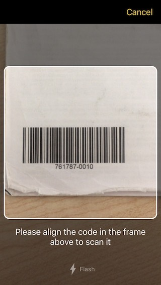
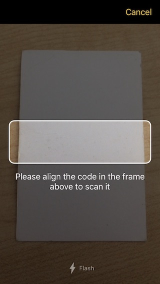

Scanbot SDK Cordova Plugin
This documentation is for the latest release version of the Scanbot SDK Cordova Plugin (cordova-plugin-scanbot-sdk@3.x).
If you are looking for the docs of the old deprecated version 1.x, it can still be found here.
Introduction
The Scanbot SDK brings scanning and document creation capabilities to your mobile apps. It contains modules which are individually licensable as license packages. For more details visit our website https://scanbot.io/sdk
This Cordova plugin provides implementations of Scanbot SDK for iOS and Android.
Following Package I + II functionality is covered by this plugin:
Package I
- Document Scanning with User Guidance
- Cropping UI
- Document Detection
- Image Filters
- PDF Creation
- Barcode and QR Code Scanning
Package II
- OCR
- MRZ Scanning
Requirements
Dev Tools
- Node.js, npm
- Cordova CLI 6.x+ (recommended 8+)
- Cordova Platforms:
- cordova-android 6.4.0+ (recommended 8+)
- cordova-ios 4.4.0+ (recommended 4.5+)
- For Android apps: Android SDK (API Level 16+), Platforms and Developer Tools
- For iOS apps: Mac OS with latest Xcode and Command Line Tools
Cordova vs. PhoneGap
Since Adobe PhoneGap is based on Apache Cordova the Scanbot SDK Cordova Plugin is fully compatible with PhoneGap. So you can also use all features of this Plugin in your PhoneGap app.
Mobile Platforms
- Android 4.1 (API Level 16) and higher
- iOS 9 and higher
Please note:
- The Scanbot SDK Plugin is available only for Android and iOS
- We don’t support rooted Android devices (custom ROMs)
- This Plugin does not work on other platforms like Windows Phone, Desktop or Web Apps
- Also, the Plugin does not work in a Progressive Web App (PWA)
Mobile Devices
- Smartphones and Tablets with a rear-facing camera with autofocus
- Supported CPUs and Architectures:
- Android:
armeabi-v7, arm64-v8a, x86, x86_64 - iOS:
arm64, armv7, x86_64, i386
- Android:
No Internet Connection Required
The Scanbot SDK works completely offline. It doesn’t even contain any networking code. This can easily be verified by routing all networking traffic coming from the app through a proxy. All data generated by the Scanbot SDK is only stored on the end users device and in absolutely no case ever transferred to a server / cloud service controlled by us. You as the customer will need to take care of uploading the scans / data to your backend, if desired.
Simulators / Emulators
While it is possible to test your App with the Scanbot SDK Plugin on simulators/emulators, we strongly recommend to use real Android/iOS devices. Depending on the emulated Camera you may not be able to test/evaluate the full functionality of the Scanbot SDK Plugin.
Serve Mode
It is not possible to test or preview the features of the Scanbot SDK Cordova Plugin within the PhoneGap Developer App.
It is also not possible to test or preview the Scanbot SDK Cordova Plugin in a desktop browser.
Or in other words, the Cordova serve mode cordova serve as well as the PhoneGap serve mode phonegap serve will not work!
You have to build your app and deploy it on the target mobile device.
Example Apps
Check out our Example Apps on GitHub:
- Ionic Cordova App: https://github.com/doo/scanbot-sdk-example-ionic
- Ionic Capacitor App: https://github.com/doo/scanbot-sdk-example-capacitor-ionic
Installation
The Scanbot SDK plugin is available as NPM package cordova-plugin-scanbot-sdk.
You can simply install and add it to your App by following command:
cordova plugin add cordova-plugin-scanbot-sdk
Or in an Ionic based projects:
ionic cordova plugin add cordova-plugin-scanbot-sdk
iOS - Xcode Project Settings
When adding a plugin to your App, Cordova automatically applies corresponding settings to the generated Xcode project file. Unfortunately the old versions of Cordova iOS Platform cordova-ios < 4.4.0 do not support auto configuration for “Embedded Binaries” in the Xcode project file which is required by the Scanbot SDK plugin.
üëç If you are using cordova-ios@4.4.0 or higher in your project, everything should be fine after the plugin installation
and you can skip this step.
⚠️ If you are using an older version of cordova-ios, you have to apply following manual settings after the plugin installation:
-
Open the generated Xcode project file with Xcode IDE:
<YOUR_APP_PROJECT_PATH>/platforms/ios/<YOUR_APP_NAME>.xcodeproj -
Go to
TARGETSsettings, open the tabGeneraland find the sectionEmbedded Binaries. Then add theScanbotSDK.frameworkto “Embedded Binaries”. TheScanbotSDK.frameworkis provided with the Scanbot SDK plugin. The following screenshot shows correct settings ofScanbotSDK.framework:

Please note and double-check: Older versions of cordova-ios will put the ScanbotSDK.framework into “Linked Frameworks and Libraries”
which is wrong and will not work for the Scabot SDK plugin!
The project will compile but your App will crash right after the start!
Android - Tuning the AndroidManifest.xml
Since your application will work with high-resolution images it is strongly recommended to add the attribute android:largeHeap="true"
in the <application> element of your AndroidManifest.xml file, especially for Android <= 7.x.
Processing hi-res images is a memory intensive task and this property will ensure your app has enough heap allocated to avoid OutOfMemoryError exceptions.
Add this attribute via <edit-config> inside the <platform name="android"> element of the config.xml file of your project:
<platform name="android">
<edit-config file="app/src/main/AndroidManifest.xml" mode="merge" target="/manifest/application" xmlns:android="http://schemas.android.com/apk/res/android">
<application android:largeHeap="true" mode="merge" />
</edit-config>
...
</platform>
See the config.xml of our example app.
Please note the file path of AndroidManifest.xml:
- for
cordova-android7.x or newer:app/src/main/AndroidManifest.xml - for older versions:
AndroidManifest.xml
⚠️ When making any changes to the config.xml do not forget to reinstall the Cordova android platform to apply
those on the re-generated Android project artifacts in platforms/android/:
cordova platform remove android
cordova platform add android
Permissions
During the installation the plugin automatically adds all required permissions to your App. Here is a listing of those permissions just for your information:
Android (will be added in your AndroidManifest.xml file)
<uses-permission android:name="android.permission.CAMERA" />- This permission is used for the camera views.
iOS (will be added in your Info.plist file)
NSCameraUsageDescription- “Privacy - Camera Usage Description”. As value describe why your app wants to access the camera. By default an empty string value will be added. You can change this value in theconfig.xmlfile of your Cordova project - seeCAMERA_USAGE_DESCRIPTION.
Modules
-
ScanbotSdk- This module provides the Scanbot SDK functionality for image operations (e.g. filter, PDF creation, etc.) -
ScanbotSdk.UI- Provides the UI functionality like Document Scanner, Cropping UI, MRZ Scanner and Barcode Scanner.
API Reference
ScanbotSdk- .initializeSdk(successCallback, errorCallback, options) -
function - .isLicenseValid(successCallback, errorCallback) -
function - .createPage(successCallback, errorCallback, options) -
function - .detectDocumentOnPage(successCallback, errorCallback, options) -
function - .setDocumentImage(successCallback, errorCallback, options) -
function - .getFilteredDocumentPreviewUri(successCallback, errorCallback, options) -
function - .applyImageFilterOnPage(successCallback, errorCallback, options) -
function - .rotatePage(successCallback, errorCallback, options) -
function - .removePage(successCallback, errorCallback, page) -
function - .createPdf(successCallback, errorCallback, options) -
function - .writeTiff(successCallback, errorCallback, options) -
function - .getOcrConfigs(successCallback, errorCallback, options) -
function - .performOcr(successCallback, errorCallback, options) -
function - .detectDocument(successCallback, errorCallback, options) -
function - .applyImageFilter(successCallback, errorCallback, options) -
function - .rotateImage(successCallback, errorCallback, options) -
function - .cleanup(successCallback, errorCallback) -
function
- .initializeSdk(successCallback, errorCallback, options) -
ScanbotSdk.UIScanbotSdkpromise-based API- ScanbotSdk.promisify() -
function
- ScanbotSdk.promisify() -
Getting started
Initialize SDK
ScanbotSdk.initializeSdk(successCallback, errorCallback, options)
The Scanbot SDK must be initialized before usage. Make sure to call the initialization after the deviceready event has been fired.
Following configuration options can be passed on initialization:
Options:
var options = {
licenseKey: '<YOUR_SCANBOT_SDK_LICENSE_KEY>',
loggingEnabled: false,
storageImageQuality: 85,
storageImageFormat: 'JPG',
storageBaseDirectory: 'file:///some/custom/storage-dir/'
};
licenseKey: Your license key for the Scanbot SDK.loggingEnabled: Optional logging flag.storageImageQuality: Optional image quality value.storageImageFormat: Optional image format value.storageBaseDirectory: Optional directory as file URI to overwrite the default storage directory of the Scanbot SDK.
Callbacks:
successCallback : function(result)
result.status-'OK'result.message- Contains a simple success message as string.
errorCallback : function(error)
error.status-'ERROR'in all error cases.error.message- Contains the error message as string.
Example code for initialization:
document.addEventListener('deviceready', onDeviceReady, false);
function onDeviceReady() {
// ...
initScanbotSdk();
// ...
}
function initScanbotSdk() {
var options = {
loggingEnabled: true,
licenseKey: '' // optional license key (empty for trial mode)
};
ScanbotSdk.initializeSdk(function(result) {
// Scanbot SDK successfully initialized
console.log(result);
}, function(error) {
// Error initializing the Scanbot SDK
console.log('Unable to initialize the Scanbot SDK: ' + error);
}, options);
}
License Key
In order to run the Scanbot SDK plugin functionality within your production app you have to purchase and use a valid Scanbot SDK license.
Each license key is valid only for a given app bundle identifier. The license also defines which modules you are allowed to use. The usage of unlicensed modules will log an error to the console and terminate the app. If your license has expired any calls of the Scanbot SDK plugin will terminate your app.
Example code for defining and using the license key:
// Please note: this is just an example license key string (it's not a valid license)
var myLicenseKey =
"fXbN2PmyqEAZ+btdkSIS36TuX2j/EE5qxVNcZMXYErbLQ" +
"3OBnE10aOQxYI8L4UKwHiZ63jthvoFwUevttctBk0wVJ7Z" +
"+Psz3/Ry8w7pXvfpB1o+JrnzGGcfwBnRi/5raQ2THDeokR" +
"RB1keky2VBOFYbCfYt3Hqms5txF2z70PE/SBTMTIVuxL7q" +
"1xcHDHclbEBriDtrHw8Pmhh9FqTg/r/4kRN/oEX37QGp+Y" +
"3ogwIBbSmV+Cv+VuwtI31uXY3/GkyN/pSJZspIl+exwQDv" +
"O0O1/R/oAURpfM4ydaWReRJtjW8+b1r9rUgPERguaXfcse" +
"HlnclItgDfBHzUUFJJU/g==\nU2NhbmJvdFNESwppby5zY" +
"2FuYm90LmRlbW8ueGFtYXJpbgoxNDg0NjExMTk5CjcxNjc" +
"KMw==\n";
var options = {
licenseKey: myLicenseKey,
// ...
};
ScanbotSdk.initializeSdk(successCallback, errorCallback, options);
Trial License
The Scanbot SDK will run without a license for one minute per session! To get an unrestricted “no-strings-attached” 30 day trial license, please submit the Trial License Form on our website.
Please kindly note that a trial license can only be used in a development and staging environment. You are not allowed to publish your app to the App Store, Play Store or any 3rd party Android App Store with a trial license.
Purchase a Production License
You can check and purchase the Scanbot SDK licenses here: https://scanbot.io/sdk.html.
App Identifier
Every app has a unique identifier (sometimes also known as “bundle identifier” or “application ID”). Your license will be bound to this identifier.
To request a trial license or purchase a production license you have to provide us the bundle identifier of your app.
Please find this identifier in the config.xml file of your app project:
<widget id="my.awesome.app.id" ...>
Logging
When initializing the Scanbot SDK you can enable logging of the SDK. By default logging is disabled.
var options = {
loggingEnabled: true,
// ...
};
ScanbotSdk.initializeSdk(successCallback, errorCallback, options);
On Android logs are printed into LogCat as well as saved on the device. You can find them in Environment.getExternalStorageDirectory()/debug_logs/[package_name]. Usually it is /sdcard/debug_logs/[package_name].
The easiest way to check the log outputs on Android is to use the Android Debug Bridge (adb).
(e.g. $ adb -s <DEVICE_ID> shell "logcat")
On iOS all logs are printed to the console. Please use Xcode to check the log outputs. There will be no log files created by the Scanbot SDK plugin.
Please note: While it may be useful for development, consider switching logging OFF in production builds for security and performance reasons!
Image Quality / Compression
The initializeSdk function can take some optional parameters that specify the image storage format and compression for generated Page images.
Page images are all images created by the Ready-To-Use UI Components (like Document Scanner, Cropping UI, etc), as well as all image manipulation functions
working with Page objects as input (like applyImageFilterOnPage, detectDocumentOnPage, etc).
var options = {
storageImageFormat: 'JPG',
storageImageQuality: 80,
};
ScanbotSdk.initializeSdk(successCallback, errorCallback, options);
storageImageQuality- defines the quality factor of JPEG images. The value must be between 1 and 100, where 100 means maximum quality and largest file size. The default value is 80 which is a good compromise between image file size and document legibility.storageImageFormat- either'JPG'or'PNG'. The default value is'JPG'.
Updating the license in production apps
To renew an expired license or extend a valid license with new Scanbot SDK features, you will have to update your app in the App Store or Play Store. The expiration date and the feature list of a license are an encrypted data part of the license key string. Which means a renewal or extension of a license will cause a new license key string to be generated.
License check in production apps
If your Scanbot SDK license has expired, any call of the Scanbot SDK API will terminate your app or result in an error.
To prevent this you should always check for license expiration during the runtime by calling the method ScanbotSdk.isLicenseValid(successCallback, errorCallback).
If the result of the successCallback returns false, you should disable any usage of the Scanbot SDK functions or UI components in your app.
We highly recommend to implement a suitable handling of this case in your app!
ScanbotSdk.isLicenseValid(successCallback, errorCallback)
Use this function to check the current state of the license. The SDK must be initialized.
Callbacks:
successCallback : function(result)
result.isLicenseValid- Contains a boolean status value of the license.truemeans the Scanbot SDK license is valid and all features can be used normally.falsemeans the license is not valid and any call of the Scanbot SDK API will terminate your app or result in an error.
errorCallback : function(error)
error.status-'ERROR'in all error cases.error.message- Contains the error message as string.
Example code for checking the license status:
ScanbotSdk.isLicenseValid(function(result) {
if (result.isLicenseValid) {
// Making your calls of the Scanbot SDK Plugin API is safe now.
ScanbotSdkUi.startCamera(...);
}
else {
// Implement a suitable handling (e.g. disable Scanbot functionality in your App)
alert("Scanbot SDK license has expired!");
}
}, handleErrorCallback);
Storage
Since version 3.0 of this Plugin the native Scanbot SDKs as well as the Plugin itself use the internal and secure storage locations for all produced files (JPG, PNG, PDF, TIFF, etc) by default.
-
On Android all files will be stored in the internal files directory of your application. No permissions are required for your app to read or write files in this directory.
-
On iOS all files will be stored in the Application Support folder of your application.
Customize Storage Location
It is strongly recommended to use the default storage location. However, you can overwrite the storage directory on initialization of the Plugin.
The initializeSdk method can take an optional parameter storageBaseDirectory to set a custom storage location.
var options = {
storageBaseDirectory: 'file:///some/custom/storage-dir/',
...
};
ScanbotSdk.initializeSdk(successCallback, errorCallback, options);
The value of the storageBaseDirectory must be a file URL ('file:///...) pointing to a valid platform-specific file system path.
If this directory does not exist yet, the Plugin will try to create it.
To work with the file system we recommend the Cordova Plugin cordova-plugin-file
For the full demo code please checkout our example app scanbot-sdk-example-ionic.
⚠️ Note: When overwriting the default storage location, make sure
- you have implemented a suitable storage permissions request handling on Android
- you fully understand the consequences regarding the accessibility (security) of the produced document files.
üëâ For more details about the storage locations on Android and iOS please also see:
Storage Cleanup
There is no automatic file clean mechanism in this Plugin, because only your App can decide when is the perfect time to remove the files produced by this Plugin (images, PDFs, etc).
To avoid storage space issues caused by too many produced image files it is strongly recommended to implement a suitable cleanup functionality based on the requirements of your app. This Plugin provides the following helper methods to keep the storage clean:
- removePage method to delete a certain
Pageobject with all its files. - cleanup method to remove all generated files by this Plugin (scanned and imported images, export files like PDF, TIFF, etc).
Promise-based API
The API as presented in the documentation uses the Cordova-style plugin callback signature, where the success and error callbacks are always passed as the first and second argument to each plugin method.
The ScanbotSdk.promisify() method returns an object that has all the functions of ScanbotSdk but with a promisified signature, that is, where every method returns a promise, instead of taking success/error callbacks as parameters. The promise-based API is only available when there is a global Promise function provided either by the runtime or by a polyfill. The arrow-style and async/await syntaxes are available only with transpilation, which is available by default to Ionic projects thanks to webpack and Babel. The promisified methods of ScanbotSdk.UI are available in ScanbotSdk.promisify().UI.
An example with initializeSdk(success, error, options) follows.
var options = {
// ...
}
//------ Cordova-style call with callbacks ------
ScanbotSdk.initializeSdk(function(result) {
// success
}, function(err) {
// error
}, options);
//-----------------------------------------------
//---------- Promise-style call ----------
ScanbotSdk.promisify().initializeSdk(options)
.then(function(result) {
// success
})
.catch(function(err) {
// error
});
//----------------------------------------
//---------- Promise-style with arrow functions ----------
ScanbotSdk.promisify().initializeSdk(options)
.then(result => {
// success
})
.catch(err => {
// error
});
//---------------------------------------------------------
//---------- async/await style ----------
try {
const result = await ScanbotSdk.promisify().initializeSdk(options);
// success
} catch (err) {
// error
}
//---------------------------------------
Ready-To-Use UI
Configuration
Settings controlling color are expected to be passed as strings in the '#RRGGBB' format.
Pages
The Scanbot SDK provides a ready-to-use UI for document scanning and cropping. Both components use the notion of a ‘page’ as a data model for the scanning and cropping activities. An page object has the following fields:
var examplePage = {
pageId: '...',
polygon: [/*points*/],
detectionResult: 'OK',
filter: 'NONE',
documentImageSizeLimit: /* { width: number, height: number } */,
originalImageFileUri: 'file:///...',
documentImageFileUri: 'file:///...',
originalPreviewImageFileUri: 'file:///...',
documentPreviewImageFileUri: 'file:///...'
}
The fields are:
pageId- a string identifying the page in the internal page file storagepolygon- the page’s cropping polygon as calculated by a document detection operation or as set by the cropping UI. Modifying the polygon will change the polygon as shown in the cropping UI but will not automatically re-crop the original image.detectionResult- the detection result of the document detection operation that produced the page (either the document scanner ordetectDocument()).filter- the image filter which was applied on the document image of this page.documentImageSizeLimit- limits the maximum resolution (width, height) of the document image. Ifnullis passed, this property is effectively ignored. If specified,widthandheightmust be > 0.originalImageFileUri- file URI of the original imagedocumentImageFileUri- file URI of the cropped document image (if document detection was successful)originalPreviewImageFileUri- file URI of a screen-sized preview of the original imagedocumentPreviewImageFileUri- file URI of a screen-sized preview of the document image
Pages are stored in an internal page file storage, where the pageId serves as a name prefix for the stored image files. Operations that modify pages work in-place. That is, for example, rotatePage() overwrites the page’s image files with their rotated versions. This behavior differs from the behavior of raw image functions like rotateImage() which always create a new file. All URI properties of a page have a ?minihash= query parameter appended to them with the hash of a portion of the image file. Different images will almost always have a different hash and therefore a different URI, which will force the WebView to reload the page’s images when changed.
Document Scanner
ScanbotSdk.UI.startDocumentScanner(successCallback, errorCallback, options)
Starts the ready-to-use Document Scanner for guided, automatic document scanning.

Callbacks:
successCallback : function(result)
result.status-'OK'if some pages were snapped,'CANCELED'if the user canceled the operation.result.pages- an array of pages. If multi-page mode is enabled, this array may contain more than one page. If multi-page mode is not enabled andresult.statusis'OK', this array contains one object.
errorCallback : function(error)
error.status-'ERROR'in all error cases.error.message- Contains the error message as string.
Options:
All UI configuration options are optional.
var options = {
uiConfigs: {
/**
* The minimum score in percent (0 - 100) of the perspective distortion to accept a detected document.
* Default is 75.0.
*/
acceptedAngleScore: number,
/**
* The minimum document width or height in percent (0 - 100) of the screen size to accept a detected document.
* Default is 80.0.
*/
acceptedSizeScore: number,
/**
* Controls whether the auto-snapping toggle button is hidden or not.
*/
autoSnappingButtonHidden: boolean,
/**
* Title of the auto-snapping toggle button.
*/
autoSnappingButtonTitle: string,
/**
* When auto-snapping is enabled the document scanner will take a photo automatically
* when a document is detected, conditions are good and the auto-snapping time-out elapses. In this
* mode the user can still tap the shutter button to snap a document.
*/
autoSnappingEnabled: boolean,
/**
* Controls the auto-snapping speed. Sensitivity must be within the 0..1 range.
* A value of 1.0 triggers automatic capturing immediately, a value of 0.0 delays the automatic by 3 seconds.
* The default value is 0.66 (2 seconds)
*/
autoSnappingSensitivity: number,
/**
* The background color of the bottom shutter-bar.
*/
bottomBarBackgroundColor: string,
/**
* The color of the title of all buttons in the bottom shutter-bar (Cancel button, etc.),
* as well as the camera permission prompt button.
*/
bottomBarButtonsColor: string,
/**
* The color of the camera background (relevant only when the camera preview mode is CameraPreviewMode.FIT_IN).
*/
cameraBackgroundColor: string,
/**
* Preview mode of the camera: Fit-In or Fill-In.
* Optional, default is Fit-In.
*/
cameraPreviewMode: CameraPreviewMode,
/**
* Title of the cancel button.
*/
cancelButtonTitle: string,
/**
* Title of the button that opens the screen where the user can allow
* the usage of the camera by the app.
*/
enableCameraButtonTitle: string,
/**
* Text that will be displayed when the app
* is not allowed to use the camera, prompting the user
* to enable the usage of the camera.
*/
enableCameraExplanationText: string,
/**
* Controls whether the flash toggle button is hidden or not.
*/
flashButtonHidden: boolean,
/**
* Title of the flash toggle button.
*/
flashButtonTitle: string,
/**
* Controls whether the flash should be initially enabled.
* The default value is FALSE.
*/
flashEnabled: boolean,
flashImageButtonHidden: boolean,
/**
* Sets whether to ignore the OK_BUT_BAD_ASPECT_RATIO detection status.
* By default BadAspectRatio is not ignored.
*/
ignoreBadAspectRatio: boolean,
/**
* The image scaling factor. The factor must be within the 0..1 range.
* A factor of 1 means that the resulting images retain their original size.
* When the factor is less than 1, resulting images will be made smaller by that factor.
* By default the scale is 1.
*/
imageScale: number,
/**
* Controls whether the multi-page toggle button is hidden or not.
*/
multiPageButtonHidden: boolean,
/**
* Title of the multi-page mode toggle button.
*/
multiPageButtonTitle: string,
/**
* Controls multi-page mode. When enabled, the user can take multiple document photos before
* closing the screen by tapping the page counter button. When disabled, the screen will be
* closed immediately after the first document photo is made.
* The default value is FALSE.
*/
multiPageEnabled: boolean,
/**
* Orientation lock mode of the camera: PORTRAIT or LANDSCAPE.
* By default the camera orientation is not locked.
*/
orientationLockMode: CameraOrientationMode,
/**
* Title suffix of the button that finishes the document scanning when multi-page scanning is enabled.
* The button's title has the format "# Pages", where # shows the number of images captured up to now and the
* suffix "Pages" is set using this method.
*/
pageCounterButtonTitle: string,
/**
* The background color of the detected document outline when the document's angle, size or aspect ratio
* is not yet sufficiently good.
* (All net.doo.snap.lib.detector.DetectionResult with OK_BUT_XXX).
*/
polygonBackgroundColor: string,
/**
* The background color of the detected document outline when we are ready to snap OK.
*/
polygonBackgroundColorOK: string,
/**
* The color of the detected document outline when the document's angle, size or aspect ratio
* is not yet sufficiently good.
* (All detection statuses in net.doo.snap.lib.detector.DetectionResult that have the OK_BUT_XXX prefix).
*/
polygonColor: string,
/**
* The color of the detected document outline when we are ready to snap OK.
*/
polygonColorOK: string,
/**
* Width of the detected document outline.
*/
polygonLineWidth: number,
/**
* The foreground color of the shutter button in auto-snapping mode.
*/
shutterButtonAutoInnerColor: string,
/**
* The background color of the shutter button in auto-snapping mode.
*/
shutterButtonAutoOuterColor: string,
shutterButtonIndicatorColor: string,
/**
* The foreground color of the shutter button in manual mode.
*/
shutterButtonManualInnerColor: string,
/**
* The background color of the shutter button in manual mode.
*/
shutterButtonManualOuterColor: string,
/**
* Text hint that will be shown when the current detection status is OK_BUT_BAD_ANGLES
*/
textHintBadAngles: string,
/**
* Text hint that will be shown when the current detection status is OK_BUT_BAD_ASPECT_RATIO
*/
textHintBadAspectRatio: string,
/**
* Text hint that will be shown when the current detection status is ERROR_NOTHING_DETECTED
*/
textHintNothingDetected: string,
/**
* Text hint that will be shown when the current detection status is OK
*/
textHintOK: string,
/**
* Text hint that will be shown when the current detection status is ERROR_TOO_DARK
*/
textHintTooDark: string,
/**
* Text hint that will be shown when the current detection status is ERROR_TOO_NOISY
*/
textHintTooNoisy: string,
/**
* Text hint that will be shown when the current detection status is OK_BUT_TOO_SMALL
*/
textHintTooSmall: string,
/**
* The background color of the top toolbar.
*/
topBarBackgroundColor: string,
/**
* The color of all active toggle buttons in the toolbar.
*/
topBarButtonsActiveColor: string,
/**
* The color of all inactive toggle buttons in the toolbar.
*/
topBarButtonsInactiveColor: string,
/**
* The background color of the user guidance hints.
*/
userGuidanceBackgroundColor: string,
/**
* The text color of the user guidance hints.
*/
userGuidanceTextColor: string,
/**
* Limits the maximum size of the document image. If width or height are zero, this property is effectively ignored.
* Where Size is
* {
* width: number;
* height: number;
* }
*/
documentImageSizeLimit: Size;
/**
* Hides the shutter button if set to TRUE. Shows it otherwise. Defaults to FALSE.
* If set to TRUE, auto-snapping is enabled and the property autoSnappingEnabled of the behaviour configuration will
* have no effect.
* Also the auto-snapping button will be hidden.
*/
shutterButtonHidden: boolean;
/**
* The text being displayed on the user-guidance label, when the scanners energy saver is activated.
* iOS only.
*/
textHintEnergySavingActive: string;
/**
* Maximum number of pages to scan. Ignored when set to null, or when `multiPageEnabled` is FALSE. Default value is null.
*/
maxNumberOfPages?: number;
}
};
Cropping UI
ScanbotSdk.UI.startCroppingScreen(successCallback, errorCallback, options)
The Cropping UI provides functionality for manual cropping and rotation of an image. It uses the edge detection algorithm of the Scanbot SDK and containts some smart UI elements like magnetic lines and a magnifier.

Callbacks:
successCallback : function(result)
result.status-'OK'if the user applied changes on image (tapped on the “done” button),'CANCELED'if the user canceled the operation (tapped on the “cancel” button).result.page- the cropped page.
errorCallback : function(error)
error.status-'ERROR'in all error cases.error.message- Contains the error message as string.
Options:
The cropping UI requires a page object. A page object can be initially created using the Document Scanner or createPage().
All UI configuration settings are optional.
var options = {
page: { /* the page object to display in the UI */ },
uiConfigs: {
/**
* Background color of the main screen.
*/
backgroundColor: string,
/**
* Background color of the bottom toolbar.
*/
bottomBarBackgroundColor: string,
/**
* Color of the titles of all buttons in the bottom toolbar (Rotate button).
*/
bottomBarButtonsColor: string,
/**
* Title of the cancel button.
*/
cancelButtonTitle: string,
/**
* Title of the Done button.
*/
doneButtonTitle: string,
/**
* Default color of the cropping outline.
*/
polygonColor: string,
/**
* Outline color of magnetically snapped edges.
*/
polygonColorMagnetic: string,
/**
* Width of the cropping outline.
*/
polygonLineWidth: number,
/**
* Title of the Rotate button.
*/
rotateButtonTitle: string,
/**
* Background color of the top toolbar.
*/
topBarBackgroundColor: string,
/**
* Color of the titles of all buttons in the top toolbar (Cancel and Done buttons).
*/
topBarButtonsColor: string,
/**
* Title in the top bar (iOS only).
*/
topBarTitle: string,
/**
* Color of the title in the top bar (iOS only).
*/
titleColor: string,
/**
* Title of the Detect button.
*/
detectButtonTitle: string,
/**
* Title of the Reset button.
*/
resetButtonTitle: string,
/**
* Controls whether the Rotate button is hidden or not.
*/
rotateButtonHidden: boolean,
/**
* Controls whether the Detect/Reset button is hidden or not.
*/
detectResetButtonHidden: boolean,
/**
* UI orientation lock mode: PORTRAIT, LANDSCAPE, etc.
* By default the UI is not locked.
*/
orientationLockMode: UIOrientationMode,
}
};
Barcode and QR Code Scanning UI
ScanbotSdk.UI.startBarcodeScanner(successCallback, errorCallback, options)
Opens a Scanning UI for barcodes and QR codes.

Callbacks:
successCallback : function(result)
result.status-'OK'if a barcode was detected,'CANCELED'if the user canceled the operation (tapped on the “cancel” button).result.barcodeResult.barcodeFormat- Format of detected barcode/QR code (e.g. “CODE_128”, “EAN_13”, “QR_CODE”, etc).result.barcodeResult.textValue- Text value of detected barcode/QR code.
errorCallback : function(error)
error.status-'ERROR'in all error cases.error.message- Contains the error message as string.
Options:
All settings are optional.
uiConfigs.barcodeFormats is an optional array of barcode formats that act as a detection filter. By default all supported formats will be detected.
var options = {
uiConfigs: {
barcodeFormats: ['QR_CODE', 'UPC_EAN', /* etc... */],
bottomButtonsActiveColor: string,
bottomButtonsInactiveColor: string,
/**
* Background color outside of the finder window.
*/
cameraOverlayColor: string,
/**
* Title of the cancel button.
*/
cancelButtonTitle: string,
/**
* Title of the button that opens the screen where the user can allow
* the usage of the camera by the app.
*/
enableCameraButtonTitle: string,
/**
* Text that will be displayed when the app
* is not allowed to use the camera, prompting the user
* to enable the usage of the camera.
*/
enableCameraExplanationText: string,
/**
* Height of the finder window in pixels.
*/
finderHeight: number,
/**
* Color of the finder window's outline.
*/
finderLineColor: string,
/**
* Thickness of the finder window's outline.
*/
finderLineWidth: number,
/**
* Text hint shown under the finder window.
*/
finderTextHint: string,
/**
* Color of the text hint under the finder window.
*/
finderTextHintColor: string,
/**
* Width of the finder window in pixels.
*/
finderWidth: number,
flashButtonTitle: string,
/**
* Controls whether the flash should be initially enabled.
* The default value is FALSE.
*/
flashEnabled: boolean,
/**
* Orientation lock mode of the camera: PORTRAIT or LANDSCAPE.
* By default the camera orientation is not locked.
*/
orientationLockMode: CameraOrientationMode,
/**
* Controls whether to play a beep sound after a successful detection.
* Default value is TRUE.
*/
successBeepEnabled: boolean,
/**
* Background color of the top toolbar.
*/
topBarBackgroundColor: string,
/**
* Color of the titles of all buttons in the top toolbar.
*/
topBarButtonsColor: string,
}
};
Machine-readable Zone Scanner
ScanbotSdk.UI.startMrzScanner(successCallback, errorCallback, options)
Opens a Scanner for machine-readable zones.

Callbacks:
successCallback : function(result)
result.status-'OK'if some MRZ data was detected,'CANCELED'if the user canceled the operation (tapped on the “cancel” button).result.fields- an array of MRZ fields. Each field is an object with the following properties:field.name- the field typefield.value- the value of the field.field.confidence- confidence in the accuracy ofvalue
errorCallback : function(error)
error.status-'ERROR'in all error cases.error.message- Contains the error message as string.
Options:
The finder window must have a width-to-height of 5, otherwise the detection process will fail. All other settings are optional.
var options = {
uiConfigs: {
bottomButtonsActiveColor: string,
bottomButtonsInactiveColor: string,
/**
* Background color outside of the finder window.
*/
cameraOverlayColor: string,
/**
* Title of the cancel button.
*/
cancelButtonTitle: string,
/**
* Title of the button that opens the screen where the user can allow
* the usage of the camera by the app.
*/
enableCameraButtonTitle: string,
/**
* Text that will be displayed when the app
* is not allowed to use the camera, prompting the user
* to enable the usage of the camera.
*/
enableCameraExplanationText: string,
/**
* Height of the finder window in pixels.
*/
finderHeight: number,
/**
* Color of the finder window's outline.
*/
finderLineColor: string,
/**
* Thickness of the finder window's outline.
*/
finderLineWidth: number,
/**
* Text hint shown under the finder window.
*/
finderTextHint: string,
/**
* Color of the text hint under the finder window.
*/
finderTextHintColor: string,
/**
* Width of the finder window in pixels.
*/
finderWidth: number,
flashButtonTitle: string,
/**
* Controls whether the flash should be initially enabled.
* The default value is FALSE.
*/
flashEnabled: boolean,
/**
* Orientation lock mode of the camera: PORTRAIT or LANDSCAPE.
* By default the camera orientation is not locked.
*/
orientationLockMode: CameraOrientationMode,
/**
* Controls whether to play a beep sound after a successful detection.
* Default value is TRUE.
*/
successBeepEnabled: boolean,
/**
* Background color of the top toolbar.
*/
topBarBackgroundColor: string,
/**
* Color of the titles of all buttons in the top toolbar.
*/
topBarButtonsColor: string,
}
}
Page operations
ScanbotSdk.createPage(successCallback, errorCallback, options)
Creates a page from an image (presumably the image of an uncropped document).
Callbacks:
successCallback : function(result)
result.page- the created page object. As the page hasn’t been cropped yet, thedocumentImageFileUrianddocumentPreviewImageFileUriproperties will be empty.
errorCallback : function(error)
error.status-'ERROR'in all error cases.error.message- Contains the error message as string.
Options:
var options = {
originalImageFileUri: 'file:///...'
};
options.originalImageFileUri- the file URI of the image to wrap in a page.
ScanbotSdk.setDocumentImage(successCallback, errorCallback, options)
Replaces the document image of a page. The passed image file will be copied into the internal page file storage.
Callbacks:
successCallback : function(result)
result.pageis the page object with the replaced document image.
errorCallback : function(error)
error.status-'ERROR'in all error cases.error.message- Contains the error message as string.
Options:
var options = {
page: ...,
imageUri: 'file:///...',
};
options.page- the page to modify.options.imageUri- the URI of an image file with which to overwrite the page’s document image.
ScanbotSdk.detectDocumentOnPage(successCallback, errorCallback, options)
Runs document detection on the original image of the given page. The detection status, polygon and cropped document image are returned as a new page object in the success callback.
Callbacks:
successCallback : function(result)
result.pageis the page object with the detection result.
errorCallback : function(error)
error.status-'ERROR'in all error cases.error.message- Contains the error message as string.
Options:
var options = {
page: ...
};
options.page- the page to crop.
ScanbotSdk.applyImageFilterOnPage(successCallback, errorCallback, options)
Applies a filter on the unfiltered document image of a page.
Callbacks:
successCallback : function(result)
result.pageis the page object with the filtered result image.
errorCallback : function(error)
error.status-'ERROR'in all error cases.error.message- Contains the error message as string.
Options:
var options = {
page: ...,
imageFilter: ImageFilter,
};
options.page- the page to filter.options.imageFilter- the image filter to apply. The special value'NONE'will remove any previously applied filter from the document image.
ScanbotSdk.getFilteredDocumentPreviewUri(successCallback, errorCallback, options)
Creates a preview image of a filter applied onto the document of a page. Does not modify the document image of the passed page.
Callbacks:
successCallback : function(result)
result.imageFileUri- file URI of the preview image of the filtered document.
errorCallback : function(error)
error.status-'ERROR'in all error cases.error.message- Contains the error message as string.
Options:
var options = {
page: ...,
imageFilter: ImageFilter,
};
options.page- the page for which to create a filtered document preview.options.imageFilter- the image filter to apply. The special value'NONE'will remove any previously applied filter from the document image.
ScanbotSdk.rotatePage(successCallback, errorCallback, options)
Rotates a page counter-clockwise in increments of 90 degrees.
Callbacks:
successCallback : function(result)
result.pageis the rotated page.
errorCallback : function(error)
error.status-'ERROR'in all error cases.error.message- Contains the error message as string.
Options:
var options = {
page: '...',
times: number
};
options.page- the page to rotate.options.times- the number of counter-clockwise 90 degrees rotations to apply.
ScanbotSdk.removePage(successCallback, errorCallback, page)
Removes a page with all its files (original image, document image, thumbnails, filtered images, etc) from the internal file storage. This method does not remove any export files (PDF, TIFF) which were generated based on this page object.
Callbacks:
successCallback : function(result)
result.status-'OK'- page images successfully removed from the device.
errorCallback : function(error)
error.status-'ERROR'in all error cases.error.message- Contains the error message as string.
Raw image operations
Document Detection
ScanbotSdk.detectDocument(successCallback, errorCallback, options)
The Scanbot SDK uses digital image processing algorithms to find rectangular, document like, polygons in a digital image. This function applies edge dectection and processes all image operations in a background thread. There will be no UI started. As input a file URI of an image must be passed. The output contains the Detection Result as enum and on success the cropped and perspective corrected image as a new file as well as the detected polygon. If there was no document detected the result enum provides the exact reason (noisy background, too dark, etc). The input image file will not be modified.
Callbacks:
successCallback : function(result)
result.documentImageFileUri- File URI of the detected and cropped/warped document image as JPEG ('file:///...'). Maybenullif detection was not successful.result.polygon- Contains the detected polygon as array. Maybe empty if detection was not successful.result.detectionResult- The Detection Result.
errorCallback : function(error)
error.status-'ERROR'in all error cases.error.message- Contains the error message as string.
Options:
var options = {
imageFileUri: 'file:///...',
quality: 80
};
options.imageFileUri- Input image file URI.options.quality- Optional quality of the output image.
Rotate Image
ScanbotSdk.rotateImage(successCallback, errorCallback, options)
Rotates an image by given degrees value. As input a file URI of the image must be passed. The output image will be a new file. The input image file will not be modified.
Callbacks:
successCallback : function(result)
result.imageFileUri- File URI of the rotated result image as JPEG ('file:///...').
errorCallback : function(error)
error.status-'ERROR'in all error cases.error.message- Contains the error message as string.
Options:
var options = {
imageFileUri: 'file:///...',
degrees: -90,
quality: 80
};
options.imageFileUri- Input image file URI.options.degrees- Degrees as integer value. The direction of rotation is counterclockwise ifdegreesvalue is positive (e.g. 90°), and clockwise ifdegreesvalue is negative (e.g. −90°).options.quality- Optional quality of the output image.
Apply Image Filter
ScanbotSdk.applyImageFilter(successCallback, errorCallback, options)
Applies filter on an image. As input a file URI of the image must be passed. The output image will be a new file. The input image file will not be modified.
Callbacks:
successCallback : function(result)
result.imageFileUri- File URI of the result image as JPEG ('file:///...').
errorCallback : function(error)
error.status-'ERROR'in all error cases.error.message- Contains the error message as string.
Options:
var options = {
imageFileUri: 'file:///...',
imageFilter: 'BINARIZED',
quality: 80
};
options.imageFileUri- Input image file URI.options.imageFilter- ImageFilter enum value.options.quality- Optional quality of the output image.
PDF Creation
ScanbotSdk.createPdf(successCallback, errorCallback, options)
The Scanbot SDK renders given images into a PDF document and stores it as a file. For each image a separate page is generated.
Callbacks:
successCallback : function(result)
result.pdfFileUri- File URI of the result file as PDF ('file:///...').
errorCallback : function(error)
error.status-'ERROR'in all error cases.error.message- Contains the error message as string.
Options:
var options = {
images: ['file:///...', 'file:///...', 'file:///...']
pageSize: "FIXED_A4"
};
options.images- Input images as an array of file URIs in proper order (image element 1 => page 1, etc).pageSize- PDFPageSize enum value to specify the output page size.
TIFF Creation
ScanbotSdk.writeTiff(successCallback, errorCallback, options)
The Scanbot SDK renders the given images into a multi-page TIFF file and stores it as a file. For each image a separate page is generated.
Callbacks:
successCallback : function(result)
result.tiffFileUri- File URI of the result file as PDF ('file:///...').
errorCallback : function(error)
error.status-'ERROR'in all error cases.error.message- Contains the error message as string.
Options:
var options = {
images: ['file:///...', 'file:///...', 'file:///...'],
oneBitEncoded: boolean;
};
options.images- Input images as an array of file URIs in proper order (image element 1 => page 1, etc).options.oneBitEncoded- if true, the input images will be binarized and the output TIFF file will be saved with one bit per pixel. If false, the input images will be stored as-is. The default value is false.
OCR - Optical Character Recognition
The Scanbot SDK Plugin provides a simple and convenient API to run Optical Character Recognition (OCR) on images. The OCR feature is a part of the Scanbot SDK Package II. It is based on the Tesseract OCR Engine with some modifications and enhancements.
OCR Languages and Data Files
The OCR engine supports a wide variety of languages. For each desired language a corresponding OCR training data file (.traineddata) must be provided.
Furthermore the special data file osd.traineddata is required (used for orientation and script detection).
The Scanbot SDK plugin ships with no training data files by default to keep the plugin package small in size. You have to download and provide the desired language files in your app.
Download and Provide OCR Language Files
You can find a list of all supported OCR languages and download links on this Tesseract wiki page.
Download
⚠️️️ Please choose and download the proper version of the language data files:
- For the latest version of Scanbot SDK Cordova Plugin 3.1.0 or newer - LSTM Data Files for Version 4.00.
- For the older versions of Scanbot SDK Cordova Plugin <= 3.0.1 - Data Files for Version 3.04/3.05.
Provide
Option 1 - Provide the Language Files in the App Package:
Download the desired language files as well as the osd.traineddata file and make sure they will be packaged in your app as:
- for Android: as assets in the sub-folder
ocr_blobs/ - for iOS: as resources in the sub-folder
ScanbotSDKOCRData.bundle/
This can be done by defining the following simple mappings in the config.xml of your Cordova project:
<platform name="android">
<resource-file src="arbitrary-source-folder-of-your-project/osd.traineddata" target="app/src/main/assets/ocr_blobs/osd.traineddata" />
<resource-file src="arbitrary-source-folder-of-your-project/eng.traineddata" target="app/src/main/assets/ocr_blobs/eng.traineddata" />
...
</platform>
<platform name="ios">
<resource-file src="arbitrary-source-folder-of-your-project/ScanbotSDKOCRData.bundle" target="ScanbotSDKOCRData.bundle" />
<resource-file src="arbitrary-source-folder-of-your-project/osd.traineddata" target="ScanbotSDKOCRData.bundle/osd.traineddata" />
<resource-file src="arbitrary-source-folder-of-your-project/eng.traineddata" target="ScanbotSDKOCRData.bundle/eng.traineddata" />
...
</platform>
See the config.xml of our example app.
Option 2 - Provide the Language Files On-Demand:
Alternatively, to keep the app package small, you can download and provide the language files in your app on run-time.
Implement a suitable download functionality of the desired language files + osd.traineddata file and place them
in the languageDataPath directory which can be determined by the getOcrConfigs method on run-time.
Language Codes
The Tesseract language data files are identified by a 3-letter language code. For example:
eng- Englishdeu- German- etc.
The Scanbot SDK API uses a 2-letter ISO code:
en- Englishde- German- etc.
Example:
If you want to perform OCR with languages English and German, you have to download and install the following data files:
eng.traineddata- language file for Englishdeu.traineddata- language file for Germanosd.traineddata- special data file for orientation and script detection
In the Scanbot SDK plugin then use languages: ["en", "de"].
OCR API
ScanbotSdk.getOcrConfigs(successCallback, errorCallback, options)
Use this function to get Scanbot SDK OCR properties of the current App installation.
Callbacks:
successCallback : function(result)
result.languageDataPath- Contains the absolute file URI of the directory where to place the OCR training data files on run-time.result.installedLanguages- Returns an array of current installed OCR languages (e.g.["en", "fr"]). The Scanbot SDK uses thelanguageDataPathdirectory to determine current installed OCR languages.
errorCallback : function(error)
error.status-'ERROR'in all error cases.error.message- Contains the error message as string.
Options:
var options = {};
No options are required for this operation.
ScanbotSdk.performOcr(successCallback, errorCallback, options)
This function takes an array of images and performs Optical Character Recognition on each of the images. As result the recognized text can be returned as plain text or a composed PDF file containing selectable and searchable text.
Callbacks:
successCallback : function(result)
result.plainText- Contains the recognized plain text.result.pdfFileUri- File URI of the composed PDF file ('file:///...').result.jsonFileUri- File URI of OCR result JSON file ('file:///...').
errorCallback : function(error)
error.status-'ERROR'in all error cases.error.message- Contains the error message as string.
Options:
var options = {
images: ['file:///...', 'file:///...', 'file:///...'],
languages: ['en', 'de'],
outputFormat: ScanbotSdk.OcrOutputFormat.PDF_FILE
};
options.images- Input images as an array of file URIs in proper order (image element 1 => page 1, etc).options.languages- An array with OCR languages of the text to be recognized (e.g.["en", "de"]). The number of languages has an impact on the performance - the more languages, the slower the recognition process. The OCR operation will fail with an error if some of the specified languages are missing. Please use the getOcrConfigs function to make sure that desired languages are installed.options.outputFormat- OcrOutputFormat enum value to specify the result.
OCR Output Format values
ScanbotSdk.OcrOutputFormat
Following output formats can be specified for OCR result:
OcrOutputFormat.PLAIN_TEXT- Returns the recognized text as plain text only.OcrOutputFormat.RESULT_JSON- Returns the OCR result as JSON object.OcrOutputFormat.PDF_FILE- Creates a composed PDF file containing selectable and searchable text.OcrOutputFormat.FULL_OCR_RESULT- Full result: composed PDF file and OCR result as JSON object.
Example of an OCR result as JSON:
{
"pages":[
{
"text":"Ut enim ad minim veniam, quis nostrud exercitation\nullamco laboris nisi ut aliquip ex ea commodo\nconsequat\n",
"words":[
{
"boundingBox":{
"y":0.46182008368200839,
"x":0.011823899371069183,
"width":0.040000000000000001,
"height":0.070606694560669453
},
"text":"Ut",
"confidence":96.546516418457031
},
{
"boundingBox":{
"y":0.46443514644351463,
"x":0.064402515723270437,
"width":0.091320754716981131,
"height":0.06903765690376569
},
"text":"enim",
"confidence":95.442947387695312
},
...
{
"boundingBox":{
"y":0.68462343096234313,
"x":0.010817610062893081,
"width":0.22213836477987423,
"height":0.13702928870292888
},
"text":"consequat",
"confidence":23.432151794433594
}
],
"lines":[
{
"boundingBox":{
"y":0.41684100418410042,
"x":0.011823899371069183,
"width":0.98037735849056606,
"height":0.14225941422594143
},
"text":"Ut enim ad minim veniam, quis nostrud exercitation\n",
"confidence":95.124320983886719
},
{
"boundingBox":{
"y":0.57112970711297073,
"x":0.011572327044025157,
"width":0.86792452830188682,
"height":0.1192468619246862
},
"text":"ullamco laboris nisi ut aliquip ex ea commodo\n",
"confidence":95.142372131347656
},
{
"boundingBox":{
"y":0.68462343096234313,
"x":0.010817610062893081,
"width":0.22213836477987423,
"height":0.13702928870292888
},
"text":"consequat\n",
"confidence":23.432151794433594
}
],
"paragraphs":[
{
"boundingBox":{
"y":0.41684100418410042,
"x":0.011320754716981131,
"width":0.98088050314465414,
"height":0.34884937238493724
},
"text":"Ut enim ad minim veniam, quis nostrud exercitation\nullamco laboris nisi ut aliquip ex ea commodo\nconsequat\n",
"confidence":90.915626525878906
}
]
}
...
]
}
Cleanup
ScanbotSdk.cleanup(successCallback, errorCallback)
By calling this function all output files generated by the native Scanbot SDKs or by this Plugin will be deleted,
including the image files of all scanned or imported Page objects, all produced PDF files, TIFF files, etc.
Callbacks:
successCallback : function()
- Clean-up was successful.
errorCallback : function(error)
error.status-'ERROR'in all error cases.error.message- Contains the error message as string.
File & Directory Handles
The Scanbot SDK plugin works with file URIs. That means all input and output files (images, PDFs, etc) as well as directories are identified by file URIs.
Please note that a file URI is not just a file path : "file:///some/file/path/.." vs. "/some/file/path/.."
Examples of valid file URIs:
-
On Android:
file:///storage/emulated/0/Android/data/my.awesome.app/some-sub-folder/ce8de3c4-3c96-4ce1-b285-483d01e1dc9a.jpg -
On iOS:
file:///var/mobile/Containers/Data/Application/D2BF9FB2-1024-4418-99B2-3709AB2C171E/Documents/some-sub-folder/05719BF8-63DB-4C8A-9A57-25B233AED33C.jpg
Detection Result values
ScanbotSdk.DetectionResult
DetectionResult.OK- Document detection was successful. The detected contour looks like a valid document.DetectionResult.OK_BUT_BAD_ANGLES- Document was detected, but the perspective is not perfect.DetectionResult.OK_BUT_BAD_ASPECT_RATIO- Document was detected, but it has a wrong rotation relatively to the camera sensor.DetectionResult.OK_BUT_TOO_SMALL- Document was detected, but it doesn’t fill the most best area in the image rect.DetectionResult.ERROR_TOO_DARK- Document was not found, most likely because of bad lightning conditions.DetectionResult.ERROR_TOO_NOISY- Document was not found, most likely because there is too much background noise (maybe too many other objects on the table, or background texture is not monotonic).DetectionResult.ERROR_NOTHING_DETECTED- No document was found.
Image Filter values
Supported image filters:
COLOR_ENHANCED- Optimizes colors, contrast and brightness.GRAYSCALE- Grayscale filterBINARIZED- Standard binarization filter with contrast optimization. Creates a grayscaled 8-bit image with mostly black or white pixels.COLOR_DOCUMENT- MagicColor filter. Fixes white-balance and cleans up the background.PURE_BINARIZED- A filter for binarizing an image. Creates an image with pixel values set to either pure black or pure white.BACKGROUND_CLEAN- Cleans up the background and tries to preserve photos within the image.BLACK_AND_WHITE- Black and white filter with background cleaning. Creates a grayscaled 8-bit image with mostly black or white pixels.OTSU_BINARIZATION- A filter for black and white conversion using OTSU binarization.DEEP_BINARIZATION- A filter for black and white conversion primary used for low-contrast documents.EDGE_HIGHLIGHT- A filter that enhances edges in low-contrast documents.LOW_LIGHT_BINARIZATION- Binarization filter primary intended to use on low-contrast documents with heavy shadows.LOW_LIGHT_BINARIZATION_2- Binarization filter primary intended to use on low-contrast documents with heavy shadows.
Page Size values
PDFPageSize.A4: The page has the aspect ratio of the image, but is fitted into A4 size. Whether portrait or landscape depends on the images aspect ratio.PDFPageSize.FIXED_A4: The page has A4 size. The image is fitted and centered within the page. Whether portrait or landscape depends on the images aspect ratio.PDFPageSize.US_LETTER: The page has the aspect ratio of the image, but is fitted into US letter size. Whether portrait or landscape depends on the images aspect ratio.PDFPageSize.FIXED_US_LETTER: The page has US letter size. The image is fitted and centered within the page. Whether portrait or landscape depends on the images aspect ratio.PDFPageSize.AUTO: For each page the best matching format (A4 or US letter) is used. Whether portrait or landscape depends on the images aspect ratio.PDFPageSize.AUTO_LOCALE: Each page of the result PDF will be of US letter or A4 size depending on the current locale. Whether portrait or landscape depends on the images aspect ratio.PDFPageSize.FROM_IMAGE: Each page is as large as its image at 72 dpi.
Polygon
The Scanbot SDK polygon is a list with 4 float points (one for each corner). Each point has coordinates in range [0..1], representing position relative to image size. For instance, if a point has the coordinates (0.5, 0.5), it means that it is located exactly in the center of the image.
Example code of a detected polygon as JSON result:
"polygon": [
{"y":0.046, "x":0.13066667},
{"y":0.035, "x":0.91066664},
{"y":0.92, "x":0.9346667},
{"y":0.916, "x":0.10666667}
]
Barcode Format
The following barcode formats are currently supported.
Android
1D barcodes
- EAN_13
- EAN_8
- UPC_A
- UPC_E
- CODE_39
- CODE_93
- CODE_128
- ITF (Interleaved 2 of 5)
- CODABAR
2D barcodes
- QR_CODE
- DATA_MATRIX
- AZTEC
- PDF_417
iOS
1D barcodes
- EAN_13
- EAN_8
- UPC_E
- CODE_39
- CODE_93
- CODE_128
- ITF (Interleaved 2 of 5)
2D barcodes
- QR_CODE
- DATA_MATRIX
- AZTEC
- PDF_417
Building Production Apps
iOS
The Scanbot SDK iOS Framework (included in this Cordova Plugin) contains the most used architectures (arm64, armv7, x86_64, i386).
So you can run it on all most used iOS devices as well as on simulators during the development phase.
To be able to submit a production build to the App Store or a test build for TestFlight you have to remove (strip away)
the architectures x86_64 and i386 from the Scanbot SDK Framework.
These architectures are only for simulators and not allowed to submit to iTunes Connect.
We provide a script for that, which can be found in:
plugins/cordova-plugin-scanbot-sdk/src/ios/Frameworks/ScanbotSDK.framework/strip-SBSDK-Framework.sh
This script removes the unnecessary architectures from the frameworks binary, code signs the framework and adds the crash symbols (dSYM) file to your apps archive. The final package size (IPA) of your app will then be significantly smaller than a debug version used during the development phase.
To add this script in your build process, you need to apply a few changes in the Xcode project:
- Open the generated Xcode project file with Xcode IDE:
<YOUR_APP_PROJECT_PATH>/platforms/ios/<YOUR_APP_NAME>.xcodeproj - Go to
TARGETSsettings and open the tabBuild Phases. Add a newRun Script Phaseand make sure this phase is below theEmbed Frameworksbuild phase. - Adjust this
Run Script Phasewith the following script data:
Script code:
bash "$BUILT_PRODUCTS_DIR/$FRAMEWORKS_FOLDER_PATH/ScanbotSDK.framework/strip-SBSDK-Framework.sh"
Script Input File:
$(SRCROOT)/../../plugins/cordova-plugin-scanbot-sdk/src/ios/Frameworks/ScanbotSDK.framework.dSYM

Android
The Scanbot Android SDK uses native libraries under the hood and supports following ABIs:
armeabi-v7a, arm64-v8a, x86 and x86_64.
By default the native libraries of all these architectures will be included in the app package (APK), which will result in a big APK file.
Please consider to remove support for x86 and x86_64 architectures. In most cases both “x86” architectures can be removed for the
release (production) build, since they are only used on emulators and on some rare devices with the Intel Atom architecture.
To exclude certain ABIs from the APK, use the abiFilters property in the Android Gradle settings of your project.
To apply any custom Gradle settings on a Cordova generated Android project, create the additional custom .gradle file with the name
platforms/android/app/build-extras.gradle
and define your custom Gradle settings in it.
In this case we define abiFilters to exclude x86 and x86_64 architectures:
ext.postBuildExtras = {
android.defaultConfig.ndk.abiFilters = ["armeabi-v7a", "arm64-v8a"]
}
üí° However, if you need to support all architectures and to optimize the APK size in any case, we highly recommend to checkout the Android App Bundle approach. It allows you to create and distribute dedicated and smaller APKs via PlayStore (basically it‚Äôs similar to the iOS App Store approach).
Release History
Version 3.2.2 (9 Oct 2019):
- üêû Bug fixes:
- iOS: Fixed modal dialog style of the Document Scanner UI, Cropping UI, Barcode Scanner UI and MRZ Scanner UI on iOS 13. All UI screens are opened in full-screen mode again.
Version 3.2.1 (22 Aug 2019):
- üêû Bug fixes:
- Android: Fixed crashes with some image filters, like
BACKGROUND_CLEAN,DEEP_BINARIZATION,LOW_LIGHT_BINARIZATION, etc. on ARM 32-bit devices (armeabi-v7).
- Android: Fixed crashes with some image filters, like
- üöô Under the hood:
- Upgraded the native Scanbot Android SDK to v1.39.52.2 (see the changelog)
Version 3.2.0 (30 Jul 2019):
- üéâ New:
- Android & iOS: New black & white Image Filter
LOW_LIGHT_BINARIZATION_2.
- Android & iOS: New black & white Image Filter
- üêû Bug fixes:
- Android: Removed permission
READ_PHONE_STATEused in a sub library of the native Scanbot SDK. - iOS: Removed hardcoded language string in the native OCR component.
- Android: Removed permission
- üöô Under the hood:
- üõ† Dependencies:
- Android: Removed dependencies to the deprecated library
net.doo:doo-datamining-tools-android.
- Android: Removed dependencies to the deprecated library
Version 3.1.0 (7 Jun 2019):
- üéâ New:
- New black & white Image Filter
LOW_LIGHT_BINARIZATION. - Added new config properties in the Document Scanner UI:
documentImageSizeLimit- to limit the resolution of the document image.maxNumberOfPages- maximum number of pages to scan.shutterButtonHidden- to hide the shutter button.textHintEnergySavingActive- the text being displayed on the user-guidance label, when the scanners energy saver is activated (iOS only).
- Android: Added native libs (.so) for the
x86_64architecture.
- New black & white Image Filter
- üöÄ Improvements:
- Improved performance of the image filter
DEEP_BINARIZATION. - OCR - Upgraded the OCR engine to Tesseract v4.00. Improved recognition speed and quality. Please also note the Breaking Changes below.
- OCR API - Detailed OCR results per page, including bounding boxes for words, lines and paragraphs. See OcrOutputFormat.RESULT_JSON.
- Improved performance of the image filter
- ⚠️ Breaking Changes:
- OCR Language Files - If you use the OCR feature of this plugin, please upgrade the OCR language files to Tesseract 4.00. See the OCR section of this documentation for more details.
- üêû Bug fixes:
- Fixed the status of the torch light toggle button in the Document Scanner on reactivating the scanning screen.
- Fixed a bug with the Magnifier in Cropping UI (the Magnifier was stuck in a corner)
- Various minor bug fixes and improvements.
- üöô Under the hood:
Version 3.0.1 (26 Mar 2019):
- üêû Bug fixes:
- iOS: Fixed handling of the config arguments
enableCameraButtonTitleandenableCameraExplanationTextin Document Scanner UI, Barcode Scanner UI and MRZ Scanner UI.
- iOS: Fixed handling of the config arguments
Version 3.0.0 (11 Mar 2019):
- üéâ NEW:
- Android & iOS: Support for PDF page sizes (see the createPdf method).
- Android & iOS: Added new Images Filters
OTSU_BINARIZATION,DEEP_BINARIZATIONandEDGE_HIGHLIGHT. - Android & iOS: A new config option
storageBaseDirectoryallows to overwrite the storage location of the native Scanbot SDKs as well as of this Plugin on initialization.
- üöÄ Improvements:
- Android: Internal Storage - All components of this Plugin now use the internal storage by default, which is more secure and do not require storage permission prompts. See the Storage section of this documentation for more details.
- ⚠️ Breaking changes:
- Android: Internal Storage - In case your app is using the storage for scanned
Pages as permanent storage, please make sure to implement a suitable migration. E.g. move the previous archivedPageimages from the old external storage folder to the new internal storage. Or alternatively overwrite the storage directory to the external folder again by using the newstorageBaseDirectoryconfig option.
- Android: Internal Storage - In case your app is using the storage for scanned
- üêû Bug fixes:
- iOS: Fixed a bug with missing
Pagemeta data as result of thedetectDocumentOnPagemethod. - Android & iOS: Various minor fixes and improvements.
- iOS: Fixed a bug with missing
- üöô Under the hood:
- üõ† Dependencies:
- Android: Requires Android SDK 28, Android Support Libs 28+ (
com.android.support:*). Upgrade tocordova-android@8.xis recommended or alternatively apply these gradle settings.
- Android: Requires Android SDK 28, Android Support Libs 28+ (
Version 2.1.2 (31 Jan 2019):
- üêû Bug fixes:
- iOS: Fixed handling of
uiConfigsarguments in Cropping UI (polygonColor, etc).
- iOS: Fixed handling of
- üöô Under the hood:
- Upgraded the native Scanbot iOS SDK to v1.8.4 (see the changelog)
Version 2.1.1 (25 Oct 2018):
- üêû Bug fixes:
- Android: Fixed a bug with freezing camera on Document Scanner start.
- Android: Some layout fixes in Cropping UI (aka. inaccessible “DONE” button).
- üöô Under the hood:
- Upgraded the native Scanbot Android SDK to v1.38.2 (see the changelog).
- The native Scanbot Android SDK now uses the latest version of Google Play Services Vision lib v16.2.0 (
com.google.android.gms:play-services-vision:16.2.0).
Version 2.1.0 (27 Sep 2018):
- üéâ NEW:
- Reset/Detect functionality in Cropping UI
- Added support for
orientationLockModein Cropping UI
- ⚠️ Breaking changes:
- Android: Added file format extension (
.jpgor.png) for allPageimages. Affects the new image files created by all modules like Document Scanner, Cropping UI, etc. Please note that only the new created image files will contain extensions. The currently available image files in the temporary storage of the Scanbot Plugin will not get file extensions and may become inaccessible. So please make sure to implement a suitable migration mechanism. - The config parameter
pageCounterButtonTitlein Document Scanner now requires a placeholder “%d” for the number of pages (e.g.pageCounterButtonTitle: "%d Page(s)")
- Android: Added file format extension (
- üêû Bug fixes:
- Android: Fixed an issue with camera on “Xiaomi Redmi 5 Plus” devices with MIUI Chinese ROM (#72)
- iOS: Fixed issues with
orientationLockModein Document Scanner
- üöô Under the hood:
Version 2.0.7 (28 Aug 2018):
- Under the hood: Upgraded the native Scanbot iOS SDK to v1.7.7
- Fixed bitcode generation
Version 2.0.6 (28 Aug 2018):
- Under the hood: Upgraded the native Scanbot Android SDK to v1.34.0
- Upgraded OpenCV to 3.4.2
- Under the hood: Upgraded the native Scanbot iOS SDK to v1.7.6
Version 2.0.5 (19 Jul 2018):
- Under the hood: Upgraded the native Scanbot Android SDK to v1.33.3
- Removed the
allowBackupflag fromAndroidManifest.xmlinio.scanbot:sdk-package-uilibrary
- Removed the
- Under the hood: Upgraded the native Scanbot iOS SDK to v1.7.4
- Fixed memory leaks in Document Scanner
Version 2.0.4 (18 Jul 2018):
- Under the hood: Upgraded the native Scanbot Android SDK to v1.33.1
- Android: Various bug fixes and improvements in methods
getFilteredDocumentPreviewUri()andapplyImageFilterOnPage() - iOS: Added the
?minihash=query parameter in result ofgetFilteredDocumentPreviewUri()
Version 2.0.3 (13 Jul 2018):
- Under the hood: Upgraded the native Scanbot iOS SDK to v1.7.3
- iOS: Fixed a bug in PDF creation: Improved image loading for PDF and OCR.
Version 2.0.2 (12 Jul 2018):
- iOS: Fix property mapping of text key
textHintOK - Android: Improved error handling of
imagesarray - Fixed Typings (
index.d.ts)
Version 2.0.1 (11 Jul 2018):
- Fixed Typings (
index.d.ts) - Android: Made code Java 1.6 compatible (
sourceCompatibility 1.6)
Version 2.0.0 (5 Jul 2018):
- New Document Scanner UI, Cropping UI and Barcode Scanner UI - based on the native Ready-To-Use UI Components of the Scanbot SDK for Android and iOS.
- Multi-page scanning in Document Scanner UI
- MRZ Scanner UI
- TIFF support: provides creation of 1-bit TIFF images with multi-page support
- New image filter types:
PURE_BINARIZED- Creates an image with pixel values set to either pure black or pure white.BACKGROUND_CLEAN- Cleans up the background and tries to preserve photos within the image.BLACK_AND_WHITE- Black and white filter with background cleaning. Creates a grayscaled 8-bit image with mostly black or white pixels.
- Under the hood: Upgraded the native Scanbot Android SDK to v1.33.0:
- Added native libs for
arm64-v8a. ⚠️ Please note: In August 2019, Google Play Store will require that new apps and app updates with native libraries provide 64-bit versions in addition to their 32-bit versions https://android-developers.googleblog.com/2017/12/improving-app-security-and-performance.html. We strongly recommend to upgrade the Scanbot SDK Plugin to the latest version to benefit from the full support of arm64-v8a libs.
- Added native libs for
- Under the hood: Upgraded the native Scanbot iOS SDK to v1.7.2:
- Dropped support for iOS 8
- Minor bug fixes and improvements
Release History for the Deprecated Version 1.x
See the v1.x documentation
Libraries and Licenses
Open Source libraries used in the Scanbot SDK for Android version 1.39.52.2:
Android PDF Writer version 1.0.8
Copyright (c) 2010 - 2013, Javier Santo Domingo (j-a-s-d@coderesearchlabs.com).
All rights reserved.
Android PDF Writer (APW) is a simple Java library to generate simple PDF documents in Google's Android devices distributed under a 2-clause BSD license (https://github.com/Turbo87/apwlibrary/blob/master/doc/APW.pdf).
Redistribution and use in source and binary forms, with or without modification, are permitted provided that the following conditions are met:
Redistributions of source code must retain the above copyright notice, this list of conditions and the following disclaimer.
Redistributions in binary form must reproduce the above copyright notice, this list of conditions and the following disclaimer in the documentation and/or other materials provided with the distribution.
THIS SOFTWARE IS PROVIDED BY THE COPYRIGHT HOLDERS AND CONTRIBUTORS "AS IS" AND ANY EXPRESS OR IMPLIED WARRANTIES, INCLUDING, BUT NOT LIMITED TO, THE IMPLIED WARRANTIES OF MERCHANTABILITY AND FITNESS FOR A PARTICULAR PURPOSE ARE DISCLAIMED. IN NO EVENT SHALL THE COPYRIGHT HOLDER OR CONTRIBUTORS BE LIABLE FOR ANY DIRECT, INDIRECT, INCIDENTAL, SPECIAL, EXEMPLARY, OR CONSEQUENTIAL DAMAGES (INCLUDING, BUT NOT LIMITED TO, PROCUREMENT OF SUBSTITUTE GOODS OR SERVICES; LOSS OF USE, DATA, OR PROFITS; OR BUSINESS INTERRUPTION) HOWEVER CAUSED AND ON ANY THEORY OF LIABILITY, WHETHER IN CONTRACT, STRICT LIABILITY, OR TORT (INCLUDING NEGLIGENCE OR OTHERWISE) ARISING IN ANY WAY OUT OF THE USE OF THIS SOFTWARE, EVEN IF ADVISED OF THE POSSIBILITY OF SUCH DAMAGE.
This software includes several classes from the Android Open Source Project Copyright 2010 The Android Open Source Project. Licensed under the Apache License, Version 2.0 (the License); you may not use this file except in compliance with the License. You may obtain a copy of the License at http://www.apache.org/licenses/LICENSE-2.0
Unless required by applicable law or agreed to in writing, software distributed under the License is distributed on an AS IS BASIS, WITHOUT WARRANTIES OR CONDITIONS OF ANY KIND, either express or implied. See the License for the specific language governing permissions and limitations under the License.
Animal Sniffer Annotations version 1.14
This library is distributed under the terms of a MIT License
(https://mvnrepository.com/artifact/org.codehaus.mojo/animal-sniffer-annotations/1.14)
Permission is hereby granted, free of charge, to any person obtaining a copy of this software and associated documentation files (the "Software"), to deal in the Software without restriction, including without limitation the rights to use, copy, modify, merge, publish, distribute, sublicense, and/or sell copies of the Software, and to permit persons to whom the Software is furnished to do so, subject to the following conditions:
The above copyright notice and this permission notice shall be included in all
copies or substantial portions of the Software.
THE SOFTWARE IS PROVIDED "AS IS", WITHOUT WARRANTY OF ANY KIND, EXPRESS OR IMPLIED, INCLUDING BUT NOT LIMITED TO THE WARRANTIES OF MERCHANTABILITY, FITNESS FOR A PARTICULAR PURPOSE AND NONINFRINGEMENT. IN NO EVENT SHALL THE AUTHORS OR COPYRIGHT HOLDERS BE LIABLE FOR ANY CLAIM, DAMAGES OR OTHER LIABILITY, WHETHER IN AN ACTION OF CONTRACT, TORT OR OTHERWISE, ARISING FROM,OUT OF OR IN CONNECTION WITH THE SOFTWARE OR THE USE OR OTHER DEALINGS IN THE SOFTWARE.
BOOST C++ Libraries version 1.68
This library is distributed under the terms of the following license: https://www.boost.org/LICENSE_1_0.txt
Boost Software License - Version 1.0 - August 17th, 2003
Permission is hereby granted, free of charge, to any person or organization obtaining a copy of the software and accompanying documentation covered by this license (the "Software") to use, reproduce, display, distribute, execute, and transmit the Software, and to prepare derivative works of the Software, and to permit third-parties to whom the Software is furnished to do so, all subject to the following:
The copyright notices in the Software and this entire statement, including the above license grant, this restriction and the following disclaimer, must be included in all copies of the Software, in whole or in part, and all derivative works of the Software, unless such copies or derivative
works are solely in the form of machine-executable object code generated by a source language processor.
THE SOFTWARE IS PROVIDED "AS IS", WITHOUT WARRANTY OF ANY KIND, EXPRESS OR IMPLIED, INCLUDING BUT NOT LIMITED TO THE WARRANTIES OF MERCHANTABILITY, FITNESS FOR A PARTICULAR PURPOSE, TITLE AND NON-INFRINGEMENT. IN NO EVENT SHALL THE COPYRIGHT HOLDERS OR ANYONE DISTRIBUTING THE SOFTWARE BE LIABLE FOR ANY DAMAGES OR OTHER LIABILITY, WHETHER IN CONTRACT, TORT OR OTHERWISE, ARISING FROM, OUT OF OR IN CONNECTION WITH THE SOFTWARE OR THE USE OR OTHER DEALINGS IN THE SOFTWARE.
BoringSSL
Copyright (c) 1998-2011 The OpenSSL Project. All rights reserved.
Original SSLeay License. Copyright (C) 1995-1998 Eric Young (eay@cryptsoft.com). All rights reserved.
Copyright (c) 2015, Google Inc.
Some files from Intel carry the following license: Copyright (c) 2012, Intel Corporation.
BoringSSL is a fork of OpenSSL. As such, large parts of it fall under OpenSSL licensing. Files that are completely new have a Google copyright and an ISC license. This library is distributed under the terms of the following license: https://github.com/google/boringssl/blob/master/LICENSE
OpenSSL License
---------------
====================================================================
Copyright (c) 1998-2011 The OpenSSL Project. All rights reserved.
Redistribution and use in source and binary forms, with or without modification, are permitted provided that the following conditions are met:
1. Redistributions of source code must retain the above copyright notice, this list of conditions and the following disclaimer.
2. Redistributions in binary form must reproduce the above copyright notice, this list of conditions and the following disclaimer in the documentation and/or other materials provided with the distribution.
3. All advertising materials mentioning features or use of this software must display the following acknowledgment:
"This product includes software developed by the OpenSSL Project for use in the OpenSSL Toolkit. (http://www.openssl.org/)"
4. The names "OpenSSL Toolkit" and "OpenSSL Project" must not be used to endorse or promote products derived from this software without prior written permission. For written permission, please contact openssl-core@openssl.org.
5. Products derived from this software may not be called "OpenSSL" nor may "OpenSSL" appear in their names without prior written permission of the OpenSSL Project.
6. Redistributions of any form whatsoever must retain the following acknowledgment: "This product includes software developed by the OpenSSL Project for use in the OpenSSL Toolkit (http://www.openssl.org/)"
THIS SOFTWARE IS PROVIDED BY THE OpenSSL PROJECT ``AS IS'' AND ANY EXPRESSED OR IMPLIED WARRANTIES, INCLUDING, BUT NOT LIMITED TO, THE
IMPLIED WARRANTIES OF MERCHANTABILITY AND FITNESS FOR A PARTICULAR
PURPOSE ARE DISCLAIMED. IN NO EVENT SHALL THE OpenSSL PROJECT OR
ITS CONTRIBUTORS BE LIABLE FOR ANY DIRECT, INDIRECT, INCIDENTAL, SPECIAL, EXEMPLARY, OR CONSEQUENTIAL DAMAGES (INCLUDING, BUT NOT LIMITED TO, PROCUREMENT OF SUBSTITUTE GOODS OR SERVICES; LOSS OF USE, DATA, OR PROFITS; OR BUSINESS INTERRUPTION) HOWEVER CAUSED AND ON ANY THEORY OF LIABILITY, WHETHER IN CONTRACT, STRICT LIABILITY, OR TORT (INCLUDING NEGLIGENCE OR OTHERWISE) ARISING IN ANY WAY OUT OF THE USE OF THIS SOFTWARE, EVEN IF ADVISED OF THE POSSIBILITY OF SUCH DAMAGE.
====================================================================
This product includes cryptographic software written by Eric Young (eay@cryptsoft.com). This product includes software written by Tim Hudson (tjh@cryptsoft.com).
Original SSLeay License
-----------------------
Copyright (C) 1995-1998 Eric Young (eay@cryptsoft.com)
All rights reserved.
This package is an SSL implementation written by Eric Young (eay@cryptsoft.com). The implementation was written so as to conform with Netscapes SSL.
This library is free for commercial and non-commercial use as long as the following conditions are aheared to. The following conditions apply to all code found in this distribution, be it the RC4, RSA, lhash, DES, etc., code; not just the SSL code. The SSL documentation included with this distribution is covered by the same copyright terms except that the holder is Tim Hudson (tjh@cryptsoft.com).
Copyright remains Eric Young's, and as such any Copyright notices in the code are not to be removed. If this package is used in a product, Eric Young should be given attribution
as the author of the parts of the library used. This can be in the form of a textual message at program startup or in documentation (online or textual) provided with the package.
Redistribution and use in source and binary forms, with or without modification, are permitted provided that the following conditions are met:
1. Redistributions of source code must retain the copyright notice, this list of conditions and the following disclaimer.
2. Redistributions in binary form must reproduce the above copyright notice, this list of conditions and the following disclaimer in the documentation and/or other materials provided with the distribution.
3. All advertising materials mentioning features or use of this software must display the following acknowledgement:
"This product includes cryptographic software written by Eric Young (eay@cryptsoft.com)"
The word 'cryptographic' can be left out if the rouines from the library being used are not cryptographic related :-).
4. If you include any Windows specific code (or a derivative thereof) from the apps directory (application code) you must include an acknowledgement:
"This product includes software written by Tim Hudson (tjh@cryptsoft.com)"
THIS SOFTWARE IS PROVIDED BY ERIC YOUNG ``AS IS'' AND ANY EXPRESS OR IMPLIED WARRANTIES, INCLUDING, BUT NOT LIMITED TO, THE IMPLIED WARRANTIES OF MERCHANTABILITY AND FITNESS FOR A PARTICULAR PURPOSE ARE DISCLAIMED. IN NO EVENT SHALL THE AUTHOR OR CONTRIBUTORS BE LIABLE FOR ANY DIRECT, INDIRECT, INCIDENTAL, SPECIAL, EXEMPLARY, OR CONSEQUENTIAL DAMAGES (INCLUDING, BUT NOT LIMITED TO, PROCUREMENT OF SUBSTITUTE GOODS OR SERVICES; LOSS OF USE, DATA, OR PROFITS; OR BUSINESS INTERRUPTION)
HOWEVER CAUSED AND ON ANY THEORY OF LIABILITY, WHETHER IN CONTRACT, STRICT LIABILITY, OR TORT (INCLUDING NEGLIGENCE OR OTHERWISE) ARISING IN ANY WAY OUT OF THE USE OF THIS SOFTWARE, EVEN IF ADVISED OF THE POSSIBILITY OF SUCH DAMAGE.
The licence and distribution terms for any publically available version or derivative of this code cannot be changed. i.e. this code cannot simply be copied and put under another distribution licence [including the GNU Public Licence.]
ISC license used for completely new code in BoringSSL:
Copyright (c) 2015, Google Inc.
Permission to use, copy, modify, and/or distribute this software for any purpose with or without fee is hereby granted, provided that the above copyright notice and this permission notice appear in all copies.
THE SOFTWARE IS PROVIDED "AS IS" AND THE AUTHOR DISCLAIMS ALL WARRANTIES
WITH REGARD TO THIS SOFTWARE INCLUDING ALL IMPLIED WARRANTIES OF MERCHANTABILITY AND FITNESS. IN NO EVENT SHALL THE AUTHOR BE LIABLE FOR ANY SPECIAL, DIRECT, INDIRECT, OR CONSEQUENTIAL DAMAGES OR ANY DAMAGES
WHATSOEVER RESULTING FROM LOSS OF USE, DATA OR PROFITS, WHETHER IN AN ACTION OF CONTRACT, NEGLIGENCE OR OTHER TORTIOUS ACTION, ARISING OUT OF OR IN CONNECTION WITH THE USE OR PERFORMANCE OF THIS SOFTWARE. */
Some files from Intel carry the following license:
Copyright (c) 2012, Intel Corporation
All rights reserved.
Redistribution and use in source and binary forms, with or without modification, are permitted provided that the following conditions are met:
* Redistributions of source code must retain the above copyright notice, this list of conditions and the following disclaimer.
* Redistributions in binary form must reproduce the above copyright notice, this list of conditions and the following disclaimer in the documentation and/or other materials provided with the distribution.
* Neither the name of the Intel Corporation nor the names of its contributors may be used to endorse or promote products derived from this software without specific prior written permission.
THIS SOFTWARE IS PROVIDED BY INTEL CORPORATION ""AS IS"" AND ANY
EXPRESS OR IMPLIED WARRANTIES, INCLUDING, BUT NOT LIMITED TO, THE
IMPLIED WARRANTIES OF MERCHANTABILITY AND FITNESS FOR A PARTICULAR
PURPOSE ARE DISCLAIMED. IN NO EVENT SHALL INTEL CORPORATION OR
CONTRIBUTORS BE LIABLE FOR ANY DIRECT, INDIRECT, INCIDENTAL, SPECIAL,
EXEMPLARY, OR CONSEQUENTIAL DAMAGES (INCLUDING, BUT NOT LIMITED TO,
PROCUREMENT OF SUBSTITUTE GOODS OR SERVICES; LOSS OF USE, DATA, OR
PROFITS; OR BUSINESS INTERRUPTION) HOWEVER CAUSED AND ON ANY THEORY OF
LIABILITY, WHETHER IN CONTRACT, STRICT LIABILITY, OR TORT (INCLUDING
NEGLIGENCE OR OTHERWISE) ARISING IN ANY WAY OUT OF THE USE OF THIS
SOFTWARE, EVEN IF ADVISED OF THE POSSIBILITY OF SUCH DAMAGE.
Filesystem.hpp
Copyright (c) 2015-2017, Wenzel Jakob
Copyright (c) 2017, Josh Junon
All rights reserved.
This library is distributed under the terms of a BSD 2-Clause License (https://github.com/bin-build/filesystem/blob/master/LICENSE)
Redistribution and use in source and binary forms, with or without modification, are permitted provided that the following conditions are met:
Redistributions of source code must retain the above copyright notice, this list of conditions and the following disclaimer.
Redistributions in binary form must reproduce the above copyright notice, this list of conditions and the following disclaimer in the documentation and/or other materials provided with the distribution.
THIS SOFTWARE IS PROVIDED BY THE COPYRIGHT HOLDERS AND CONTRIBUTORS "AS IS" AND ANY EXPRESS OR IMPLIED WARRANTIES, INCLUDING, BUT NOT LIMITED TO, THE IMPLIED WARRANTIES OF MERCHANTABILITY AND FITNESS FOR A PARTICULAR PURPOSE ARE DISCLAIMED. IN NO EVENT SHALL THE COPYRIGHT HOLDER OR CONTRIBUTORS BE LIABLE FOR ANY DIRECT, INDIRECT, INCIDENTAL, SPECIAL, EXEMPLARY, OR CONSEQUENTIAL DAMAGES (INCLUDING, BUT NOT LIMITED TO, PROCUREMENT OF SUBSTITUTE GOODS OR SERVICES; LOSS OF USE, DATA, OR PROFITS; OR BUSINESS INTERRUPTION) HOWEVER CAUSED AND ON ANY THEORY OF LIABILITY, WHETHER IN CONTRACT, STRICT LIABILITY, OR TORT (INCLUDING NEGLIGENCE OR OTHERWISE) ARISING IN ANY WAY OUT OF THE USE OF THIS SOFTWARE, EVEN IF ADVISED OF THE POSSIBILITY OF SUCH DAMAGE.
Functional Java version 4.7
Copyright (c) 2008-2011, Tony Morris, Runar Bjarnason, Tom Adams, Brad Clow, Ricky Clarkson, Jason Zaugg
All rights reserved.
This library is distributed under the terms of the following BSD 3-clause license (http://www.functionaljava.org/docs.html).
BSD 3 license
Redistribution and use in source and binary forms, with or without modification, are permitted provided that the following conditions are met:
Redistributions of source code must retain the above copyright notice, this list of conditions and the following disclaimer.
Redistributions in binary form must reproduce the above copyright notice, this list of conditions and the following disclaimer in the documentation and/or other materials provided with the distribution.
The name of the author may not be used to endorse or promote products derived from this software without specific prior written permission.
THIS SOFTWARE IS PROVIDED BY THE AUTHOR ``AS IS'' AND ANY EXPRESS OR
IMPLIED WARRANTIES, INCLUDING, BUT NOT LIMITED TO, THE IMPLIED WARRANTIES
OF MERCHANTABILITY AND FITNESS FOR A PARTICULAR PURPOSE ARE DISCLAIMED.
IN NO EVENT SHALL THE AUTHOR BE LIABLE FOR ANY DIRECT, INDIRECT,
INCIDENTAL, SPECIAL, EXEMPLARY, OR CONSEQUENTIAL DAMAGES (INCLUDING, BUT
NOT LIMITED TO, PROCUREMENT OF SUBSTITUTE GOODS OR SERVICES; LOSS OF USE, DATA, OR PROFITS; OR BUSINESS INTERRUPTION) HOWEVER CAUSED AND ON ANY THEORY OF LIABILITY, WHETHER IN CONTRACT, STRICT LIABILITY, OR TORT
(INCLUDING NEGLIGENCE OR OTHERWISE) ARISING IN ANY WAY OUT OF THE USE OF
THIS SOFTWARE, EVEN IF ADVISED OF THE POSSIBILITY OF SUCH DAMAGE.
JSON for Modern C++ version 3.1.0
Copyright (c) 2013-2018 Niels Lohmann <http://nlohmann.me>.
This library is distributed under the terms of a MIT License (https://github.com/nlohmann/json/blob/develop/LICENSE.MIT)
Permission is hereby granted, free of charge, to any person obtaining a copy of this software and associated documentation files (the "Software"), to deal in the Software without restriction, including without limitation the rights to use, copy, modify, merge, publish, distribute, sublicense, and/or sell copies of the Software, and to permit persons to whom the Software is furnished to do so, subject to the following conditions:
The above copyright notice and this permission notice shall be included in all
copies or substantial portions of the Software.
THE SOFTWARE IS PROVIDED "AS IS", WITHOUT WARRANTY OF ANY KIND, EXPRESS OR IMPLIED, INCLUDING BUT NOT LIMITED TO THE WARRANTIES OF MERCHANTABILITY, FITNESS FOR A PARTICULAR PURPOSE AND NONINFRINGEMENT. IN NO EVENT SHALL THE AUTHORS OR COPYRIGHT HOLDERS BE LIABLE FOR ANY CLAIM, DAMAGES OR OTHER LIABILITY, WHETHER IN AN ACTION OF CONTRACT, TORT OR OTHERWISE, ARISING FROM,OUT OF OR IN CONNECTION WITH THE SOFTWARE OR THE USE OR OTHER DEALINGS IN THE SOFTWARE.
Leptonica 1.71
Copyright @ 2001-2015, Leptonica, (http://leptonica.org),
is distributed under a Creative Commons Attribution 3.0 United States License ( http://creativecommons.org/licenses/by/3.0/us/).
LibTIFF - TIFF Library and Utilities v4.0.10
Copyright (c) 1988-1997 Sam Leffler
Copyright (c) 1991-1997 Silicon Graphics, Inc.
This license is distributed under the terms of the following license: http://libtiff.maptools.org/misc.html.
Permission to use, copy, modify, distribute, and sell this software and its documentation for any purpose is hereby granted without fee, provided that (i) the above copyright notices and this permission notice appear in all copies of the software and related documentation, and (ii) the names of Sam Leffler and Silicon Graphics may not be used in any advertising or publicity relating to the software without the specific, prior written permission of Sam Leffler and Silicon Graphics.
THE SOFTWARE IS PROVIDED "AS-IS" AND WITHOUT WARRANTY OF ANY KIND,
EXPRESS, IMPLIED OR OTHERWISE, INCLUDING WITHOUT LIMITATION, ANY
WARRANTY OF MERCHANTABILITY OR FITNESS FOR A PARTICULAR PURPOSE.
IN NO EVENT SHALL SAM LEFFLER OR SILICON GRAPHICS BE LIABLE FOR
ANY SPECIAL, INCIDENTAL, INDIRECT OR CONSEQUENTIAL DAMAGES OF ANY KIND,
OR ANY DAMAGES WHATSOEVER RESULTING FROM LOSS OF USE, DATA OR PROFITS,
WHETHER OR NOT ADVISED OF THE POSSIBILITY OF DAMAGE, AND ON ANY THEORY OF LIABILITY, ARISING OUT OF OR IN CONNECTION WITH THE USE OR PERFORMANCE
OF THIS SOFTWARE.
OpenCV 3.4.7
Copyright © 2014, Itseez. All rights reserved.
This library is distributed under the terms of a 3-clause BSD license: http://opencv.org/license.html.
License Agreement
For Open Source Computer Vision Library
(3-clause BSD License)
Redistribution and use in source and binary forms, with or without modification, are permitted provided that the following conditions are met:
Redistributions of source code must retain the above copyright notice, this list of conditions and the following disclaimer.
Redistributions in binary form must reproduce the above copyright notice, this list of conditions and the following disclaimer in the documentation and/or other materials provided with the distribution.
Neither the names of the copyright holders nor the names of the contributors may be used to endorse or promote products derived from this software without specific prior written permission.
This software is provided by the copyright holders and contributors “as is” and any express or implied warranties, including, but not limited to, the implied warranties of merchantability and fitness for a particular purpose are disclaimed. In no event shall copyright holders or contributors be liable for any direct, indirect, incidental, special, exemplary, or consequential damages (including, but not limited to, procurement of substitute goods or services; loss of use, data, or profits; or business interruption) however caused and on any theory of liability, whether in contract, strict liability, or tort (including negligence or otherwise) arising in any way out of the use of this software, even if advised of the possibility of such damage.
Reactive Streams 1.0.1
This library is distributed under the terms of a Creative Commons License version 1.0 which you can find here: http://creativecommons.org/publicdomain/zero/1.0/.
(https://mvnrepository.com/artifact/org.reactivestreams/reactive-streams/1.0.1)
ZXing ("Zebra Crossing") barcode scanning library for Java, Android 3.3.0
This library is distributed under the terms of the following Apache 2.0 style license: https://github.com/zxing/zxing/blob/master/LICENSE
Licensed under the Apache License, Version 2.0 (the License); you may not use this file except in compliance with the License. You may obtain a copy of the License at
http://www.apache.org/licenses/LICENSE-2.0
Unless required by applicable law or agreed to in writing, software distributed under the License is distributed on an AS IS BASIS, WITHOUT WARRANTIES OR CONDITIONS OF ANY KIND, either express or implied. See the License for the specific language governing permissions and limitations under the License.
========================================================================
jai-imageio
========================================================================
Copyright (c) 2005 Sun Microsystems, Inc.
Copyright © 2010-2014 University of Manchester
Copyright © 2010-2015 Stian Soiland-Reyes
Copyright © 2015 Peter Hull
All Rights Reserved.
Redistribution and use in source and binary forms, with or without modification, are permitted provided that the following conditions are met:
Redistribution of source code must retain the above copyright notice, this list of conditions and the following disclaimer.
Redistribution in binary form must reproduce the above copyright notice, this list of conditions and the following disclaimer in the documentation and/or other materials provided with the distribution.
Neither the name of Sun Microsystems, Inc. or the names of contributors may be used to endorse or promote products derived from this software without specific prior written permission.
This software is provided "AS IS," without a warranty of any kind. ALL EXPRESS OR IMPLIED CONDITIONS, REPRESENTATIONS AND WARRANTIES, INCLUDING ANY IMPLIED WARRANTY OF MERCHANTABILITY, FITNESS FOR A PARTICULAR PURPOSE OR NON-INFRINGEMENT, ARE HEREBY EXCLUDED. SUN MIDROSYSTEMS, INC. ("SUN") AND ITS LICENSORS SHALL NOT BE LIABLE FOR ANY DAMAGES SUFFERED BY LICENSEE AS A RESULT OF USING, MODIFYING OR DISTRIBUTING THIS SOFTWARE OR ITS
DERIVATIVES. IN NO EVENT WILL SUN OR ITS LICENSORS BE LIABLE FOR ANY LOST REVENUE, PROFIT OR DATA, OR FOR DIRECT, INDIRECT, SPECIAL, CONSEQUENTIAL, INCIDENTAL OR PUNITIVE DAMAGES, HOWEVER CAUSED AND REGARDLESS OF THE THEORY OF LIABILITY, ARISING OUT OF THE USE OF OR INABILITY TO USE THIS SOFTWARE, EVEN IF SUN HAS BEEN ADVISED OF THE POSSIBILITY OF SUCH DAMAGES.
You acknowledge that this software is not designed or intended for use in the design, construction, operation or maintenance of any nuclear facility.
***ALL OF THE FOLLOWING LIBRARIES UNDER THIS SUBHEADING ARE DISTRIBUTED UNDER THE TERMS OF AN APACHE LICENSE VERSION 2.0:***
Licensed under the Apache License, Version 2.0 (the License); you may not use this file except in compliance with the License. You may obtain a copy of the License at
http://www.apache.org/licenses/LICENSE-2.0
Unless required by applicable law or agreed to in writing, software distributed under the License is distributed on an AS IS BASIS, WITHOUT WARRANTIES OR CONDITIONS OF ANY KIND, either express or implied. See the License for the specific language governing permissions and limitations under the License.
This software includes several classes from the Android Open Source Project distributed under the Apache License Version 2.0.
Copyright (c) 2010 - present The Android Open Source Project.
CWAC-Camera version 0.6.33
Copyright © CommonsWare
(https://github.com/commonsguy/cwac-camera/blob/master/LICENSE)
Commons-codec version 1.9
Copyright (c) The Apache Software Foundation
(http://commons.apache.org/)
Commons-io version 2.4
Copyright (c) The Apache Software Foundation
(http://commons.apache.org/)
Commons-lang version 2.6
Copyright (c) The Apache Software Foundation
(http://commons.apache.org/)
Dagger version 2.16
Copyright 2012 The Dagger Authors
(https://github.com/google/dagger/releases/tag/dagger-2.16)
Error Prone Annotations version 2.0.18
(https://mvnrepository.com/artifact/com.google.errorprone/error_prone_annotations/2.0.18)
FindBugs JSR305 version 1.3.9
(https://mvnrepository.com/artifact/com.google.code.findbugs/jsr305/1.3.9)
Guava: Google Core Libraries For Java 23.0-android
(https://mvnrepository.com/artifact/com.google.guava/guava/23.0-android)
IntelliJ Annotations version 12.0
Copyright (c) JetBrains
(http://www.jetbrains.org/display/IJOS/Home;jsessionid=2C51561BC0A15118F82A976A95F6DEA8)
J2ObjC Annotations version 1.1
(https://mvnrepository.com/artifact/com.google.j2objc/j2objc-annotations/1.1)
Kotlin Standard Library JDK 7
(https://mvnrepository.com/artifact/org.jetbrains.kotlin/kotlin-stdlib-jdk7)
Kotlin Standard Library version 1.2.50
(https://mvnrepository.com/artifact/org.jetbrains.kotlin/kotlin-stdlib/1.2.50)
Picasso version 2.5.2
Copyright (c) 2013 Square, Inc.
http://square.github.io/picasso/
RxJava version 2.1.5
Copyright (c) 2016-present, RxJava Contributors.
(https://github.com/ReactiveX/RxJava)
RxAndroid version 2.0.1
Copyright (c) 2015 The RxAndroid authors
(https://github.com/ReactiveX/RxAndroid)
Tesseract 4.00
Tesseract, maintained by Google (http://code.google.com/p/tesseract-ocr/),
------------------------------------------------------------------------------------------------------------------------
Open Source libraries used in the Scanbot SDK for iOS version 1.9.3:
BOOST C++ Libraries version 1.68
This library is distributed under the terms of the following license: https://www.boost.org/LICENSE_1_0.txt
Boost Software License - Version 1.0 - August 17th, 2003
Permission is hereby granted, free of charge, to any person or organization obtaining a copy of the software and accompanying documentation covered by this license (the "Software") to use, reproduce, display, distribute, execute, and transmit the Software, and to prepare derivative works of the Software, and to permit third-parties to whom the Software is furnished to do so, all subject to the following:
The copyright notices in the Software and this entire statement, including the above license grant, this restriction and the following disclaimer, must be included in all copies of the Software, in whole or in part, and all derivative works of the Software, unless such copies or derivative
works are solely in the form of machine-executable object code generated by a source language processor.
THE SOFTWARE IS PROVIDED "AS IS", WITHOUT WARRANTY OF ANY KIND, EXPRESS OR IMPLIED, INCLUDING BUT NOT LIMITED TO THE WARRANTIES OF MERCHANTABILITY, FITNESS FOR A PARTICULAR PURPOSE, TITLE AND NON-INFRINGEMENT. IN NO EVENT SHALL THE COPYRIGHT HOLDERS OR ANYONE DISTRIBUTING THE SOFTWARE BE LIABLE FOR ANY DAMAGES OR OTHER LIABILITY, WHETHER IN CONTRACT, TORT OR OTHERWISE, ARISING FROM, OUT OF OR IN CONNECTION WITH THE SOFTWARE OR THE USE OR OTHER DEALINGS IN THE SOFTWARE.
Filesystem.hpp
Copyright (c) 2015-2017, Wenzel Jakob
Copyright (c) 2017, Josh Junon
All rights reserved.
This library is distributed under the terms of a BSD 2-Clause License (https://github.com/bin-build/filesystem/blob/master/LICENSE)
Redistribution and use in source and binary forms, with or without modification, are permitted provided that the following conditions are met:
Redistributions of source code must retain the above copyright notice, this list of conditions and the following disclaimer.
Redistributions in binary form must reproduce the above copyright notice, this list of conditions and the following disclaimer in the documentation and/or other materials provided with the distribution.
THIS SOFTWARE IS PROVIDED BY THE COPYRIGHT HOLDERS AND CONTRIBUTORS "AS IS" AND ANY EXPRESS OR IMPLIED WARRANTIES, INCLUDING, BUT NOT LIMITED TO, THE IMPLIED WARRANTIES OF MERCHANTABILITY AND FITNESS FOR A PARTICULAR PURPOSE ARE DISCLAIMED. IN NO EVENT SHALL THE COPYRIGHT HOLDER OR CONTRIBUTORS BE LIABLE FOR ANY DIRECT, INDIRECT, INCIDENTAL, SPECIAL, EXEMPLARY, OR CONSEQUENTIAL DAMAGES (INCLUDING, BUT NOT LIMITED TO, PROCUREMENT OF SUBSTITUTE GOODS OR SERVICES; LOSS OF USE, DATA, OR PROFITS; OR BUSINESS INTERRUPTION) HOWEVER CAUSED AND ON ANY THEORY OF LIABILITY, WHETHER IN CONTRACT, STRICT LIABILITY, OR TORT (INCLUDING NEGLIGENCE OR OTHERWISE) ARISING IN ANY WAY OUT OF THE USE OF THIS SOFTWARE, EVEN IF ADVISED OF THE POSSIBILITY OF SUCH DAMAGE.
JSON for Modern C++ version 3.1.0
Copyright (c) 2013-2018 Niels Lohmann <http://nlohmann.me>.
This library is distributed under the terms of a MIT License (https://github.com/nlohmann/json/blob/develop/LICENSE.MIT)
Permission is hereby granted, free of charge, to any person obtaining a copy of this software and associated documentation files (the "Software"), to deal in the Software without restriction, including without limitation the rights to use, copy, modify, merge, publish, distribute, sublicense, and/or sell copies of the Software, and to permit persons to whom the Software is furnished to do so, subject to the following conditions:
The above copyright notice and this permission notice shall be included in all copies or substantial portions of the Software.
THE SOFTWARE IS PROVIDED "AS IS", WITHOUT WARRANTY OF ANY KIND, EXPRESS OR IMPLIED, INCLUDING BUT NOT LIMITED TO THE WARRANTIES OF MERCHANTABILITY, FITNESS FOR A PARTICULAR PURPOSE AND NONINFRINGEMENT. IN NO EVENT SHALL THE AUTHORS OR COPYRIGHT HOLDERS BE LIABLE FOR ANY CLAIM, DAMAGES OR OTHER LIABILITY, WHETHER IN AN ACTION OF CONTRACT, TORT OR OTHERWISE, ARISING FROM,OUT OF OR IN CONNECTION WITH THE SOFTWARE OR THE USE OR OTHER DEALINGS IN THE SOFTWARE.
Leptonica 1.71
Copyright @ 2001-2015, Leptonica, (http://leptonica.org),
is distributed under a Creative Commons Attribution 3.0 United States License ( http://creativecommons.org/licenses/by/3.0/us/).
LibTIFF - TIFF Library and Utilities v4.0.10
Copyright (c) 1988-1997 Sam Leffler
Copyright (c) 1991-1997 Silicon Graphics, Inc.
This license is distributed under the terms of the following license: http://libtiff.maptools.org/misc.html.
Permission to use, copy, modify, distribute, and sell this software and its documentation for any purpose is hereby granted without fee, provided that (i) the above copyright notices and this permission notice appear in all copies of the software and related documentation, and (ii) the names of Sam Leffler and Silicon Graphics may not be used in any advertising or publicity relating to the software without the specific, prior written permission of Sam Leffler and Silicon Graphics.
THE SOFTWARE IS PROVIDED "AS-IS" AND WITHOUT WARRANTY OF ANY KIND,
EXPRESS, IMPLIED OR OTHERWISE, INCLUDING WITHOUT LIMITATION, ANY
WARRANTY OF MERCHANTABILITY OR FITNESS FOR A PARTICULAR PURPOSE.
IN NO EVENT SHALL SAM LEFFLER OR SILICON GRAPHICS BE LIABLE FOR
ANY SPECIAL, INCIDENTAL, INDIRECT OR CONSEQUENTIAL DAMAGES OF ANY KIND,
OR ANY DAMAGES WHATSOEVER RESULTING FROM LOSS OF USE, DATA OR PROFITS,
WHETHER OR NOT ADVISED OF THE POSSIBILITY OF DAMAGE, AND ON ANY THEORY OF LIABILITY, ARISING OUT OF OR IN CONNECTION WITH THE USE OR PERFORMANCE
OF THIS SOFTWARE.
G8Tesseract
Copyright @ 2014 Daniele Galiotto. https://github.com/gali8/Tesseract-OCR-iOS
This library is distributed under the terms of a MIT License (https://github.com/gali8/Tesseract-OCR-iOS/blob/master/LICENSE.md).
Permission is hereby granted, free of charge, to any person obtaining a copy of this software and associated documentation files (the "Software"), to deal in the Software without restriction, including without limitation the rights to use, copy, modify, merge, publish, distribute, sublicense, and/or sell copies of the Software, and to permit persons to whom the Software is furnished to do so, subject to the following conditions:
The above copyright notice and this permission notice shall be included in all copies or substantial portions of the Software.
THE SOFTWARE IS PROVIDED "AS IS", WITHOUT WARRANTY OF ANY KIND, EXPRESS OR IMPLIED, INCLUDING BUT NOT LIMITED TO THE WARRANTIES OF MERCHANTABILITY, FITNESS FOR A PARTICULAR PURPOSE AND NONINFRINGEMENT. IN NO EVENT SHALL THE AUTHORS OR COPYRIGHT HOLDERS BE LIABLE FOR ANY CLAIM, DAMAGES OR OTHER LIABILITY, WHETHER IN AN ACTION OF CONTRACT, TORT OR OTHERWISE, ARISING FROM, OUT OF OR IN CONNECTION WITH THE SOFTWARE OR THE USE OR OTHER DEALINGS IN THE SOFTWARE.
OpenCV 3.4.3
Copyright © 2014, Itseez. All rights reserved.
This library is distributed under the terms of a 3-clause BSD license: http://opencv.org/license.html.
License Agreement
For Open Source Computer Vision Library
(3-clause BSD License)
Redistribution and use in source and binary forms, with or without modification, are permitted provided that the following conditions are met:
Redistributions of source code must retain the above copyright notice, this list of conditions and the following disclaimer.
Redistributions in binary form must reproduce the above copyright notice, this list of conditions and the following disclaimer in the documentation and/or other materials provided with the distribution.
Neither the names of the copyright holders nor the names of the contributors may be used to endorse or promote products derived from this software without specific prior written permission.
This software is provided by the copyright holders and contributors “as is” and any express or implied warranties, including, but not limited to, the implied warranties of merchantability and fitness for a particular purpose are disclaimed. In no event shall copyright holders or contributors be liable for any direct, indirect, incidental, special, exemplary, or consequential damages (including, but not limited to, procurement of substitute goods or services; loss of use, data, or profits; or business interruption) however caused and on any theory of liability, whether in contract, strict liability, or tort (including negligence or otherwise) arising in any way out of the use of this software, even if advised of the possibility of such damage.
OpenSSL 1.0.2q
Copyright @ 1998-2011 The OpenSSL Project. All rights reserved. (https://www.openssl.org)
This library is distributed under the terms of the following license: https://github.com/openssl/openssl/blob/master/LICENSE
The OpenSSL toolkit stays under a double license, i.e. both the conditions of the OpenSSL License and the original SSLeay license apply to the toolkit. See below for the actual license texts.
This product includes software developed by the OpenSSL Project for use in the OpenSSL Toolkit (http://www.openssl.org).
THIS SOFTWARE IS PROVIDED BY THE OpenSSL PROJECT ``AS IS'' AND ANY
EXPRESSED OR IMPLIED WARRANTIES, INCLUDING, BUT NOT LIMITED TO, THE
IMPLIED WARRANTIES OF MERCHANTABILITY AND FITNESS FOR A PARTICULAR
PURPOSE ARE DISCLAIMED. IN NO EVENT SHALL THE OpenSSL PROJECT OR ITS CONTRIBUTORS BE LIABLE FOR ANY DIRECT, INDIRECT, INCIDENTAL, SPECIAL, EXEMPLARY, OR CONSEQUENTIAL DAMAGES (INCLUDING, BUT NOT LIMITED TO, PROCUREMENT OF SUBSTITUTE GOODS OR SERVICES; LOSS OF USE, DATA, OR PROFITS; OR BUSINESS INTERRUPTION) HOWEVER CAUSED AND ON ANY THEORY OF LIABILITY, WHETHER IN CONTRACT, STRICT LIABILITY, OR TORT (INCLUDING NEGLIGENCE OR OTHERWISE) ARISING IN ANY WAY OUT OF THE USE OF THIS SOFTWARE, EVEN IF ADVISED OF THE POSSIBILITY OF SUCH DAMAGE.
This product includes cryptographic software written by Eric Young (eay@cryptsoft.com). This product includes software written by Tim Hudson (tjh@cryptsoft.com).
Redistribution and use in source and binary forms, with or without modification, are permitted provided that the following conditions are met:
Redistributions of source code must retain the copyright notice, this list of conditions and the following disclaimer.
Redistributions in binary form must reproduce the above copyright notice, this list of conditions and the following disclaimer in the documentation and/or other materials provided with the distribution.
All advertising materials mentioning features or use of this software must display the following acknowledgement: "This product includes cryptographic software written by Eric Young (eay@cryptsoft.com)". The word 'cryptographic' can be left out if the rouines from the library being used are not cryptographic related :-).
If you include any Windows specific code (or a derivative thereof) from the apps directory (application code) you must include an acknowledgement: "This product includes software written by Tim Hudson (tjh@cryptsoft.com)"
THIS SOFTWARE IS PROVIDED BY ERIC YOUNG ``AS IS'' AND ANY EXPRESS OR IMPLIED WARRANTIES, INCLUDING, BUT NOT LIMITED TO, THE IMPLIED WARRANTIES OF MERCHANTABILITY AND FITNESS FOR A PARTICULAR PURPOSE ARE DISCLAIMED. IN NO EVENT SHALL THE AUTHOR OR CONTRIBUTORS BE LIABLE FOR ANY DIRECT, INDIRECT, INCIDENTAL, SPECIAL, EXEMPLARY, OR CONSEQUENTIAL DAMAGES (INCLUDING, BUT NOT LIMITED TO, PROCUREMENT OF SUBSTITUTE GOODS OR SERVICES; LOSS OF USE, DATA, OR PROFITS; OR BUSINESS INTERRUPTION) HOWEVER CAUSED AND ON ANY THEORY OF LIABILITY, WHETHER IN CONTRACT, STRICT LIABILITY, OR TORT (INCLUDING NEGLIGENCE OR OTHERWISE) ARISING IN ANY WAY OUT OF THE USE OF THIS SOFTWARE, EVEN IF ADVISED OF THE POSSIBILITY OF SUCH DAMAGE.
The licence and distribution terms for any publically available version or derivative of this code cannot be changed. i.e. this code cannot simply be copied and put under another distribution licence [including the GNU Public Licence.]
Tesseract 4.0.0
Tesseract, maintained by Google (http://code.google.com/p/tesseract-ocr/),
is distributed under the Apache 2.0 license (http://www.apache.org/licenses/LICENSE-2.0).
Unless required by applicable law or agreed to in writing, software distributed under the License is distributed on an "AS IS" BASIS, WITHOUT WARRANTIES OR CONDITIONS OF ANY KIND, either express or implied. See the License for the specific language governing permissions and limitations under the License.
Nameof C++ 0.8.3
Copyright (c) 2016, 2018 - 2019 Daniil Goncharov
Permission is hereby granted, free of charge, to any person obtaining a copy
of this software and associated documentation files (the "Software"), to deal
in the Software without restriction, including without limitation the rights
to use, copy, modify, merge, publish, distribute, sublicense, and/or sell
copies of the Software, and to permit persons to whom the Software is
furnished to do so, subject to the following conditions:
The above copyright notice and this permission notice shall be included in all
copies or substantial portions of the Software.
THE SOFTWARE IS PROVIDED "AS IS", WITHOUT WARRANTY OF ANY KIND, EXPRESS OR
IMPLIED, INCLUDING BUT NOT LIMITED TO THE WARRANTIES OF MERCHANTABILITY,
FITNESS FOR A PARTICULAR PURPOSE AND NONINFRINGEMENT. IN NO EVENT SHALL THE
AUTHORS OR COPYRIGHT HOLDERS BE LIABLE FOR ANY CLAIM, DAMAGES OR OTHER
LIABILITY, WHETHER IN AN ACTION OF CONTRACT, TORT OR OTHERWISE, ARISING FROM,
OUT OF OR IN CONNECTION WITH THE SOFTWARE OR THE USE OR OTHER DEALINGS IN THE
SOFTWARE.